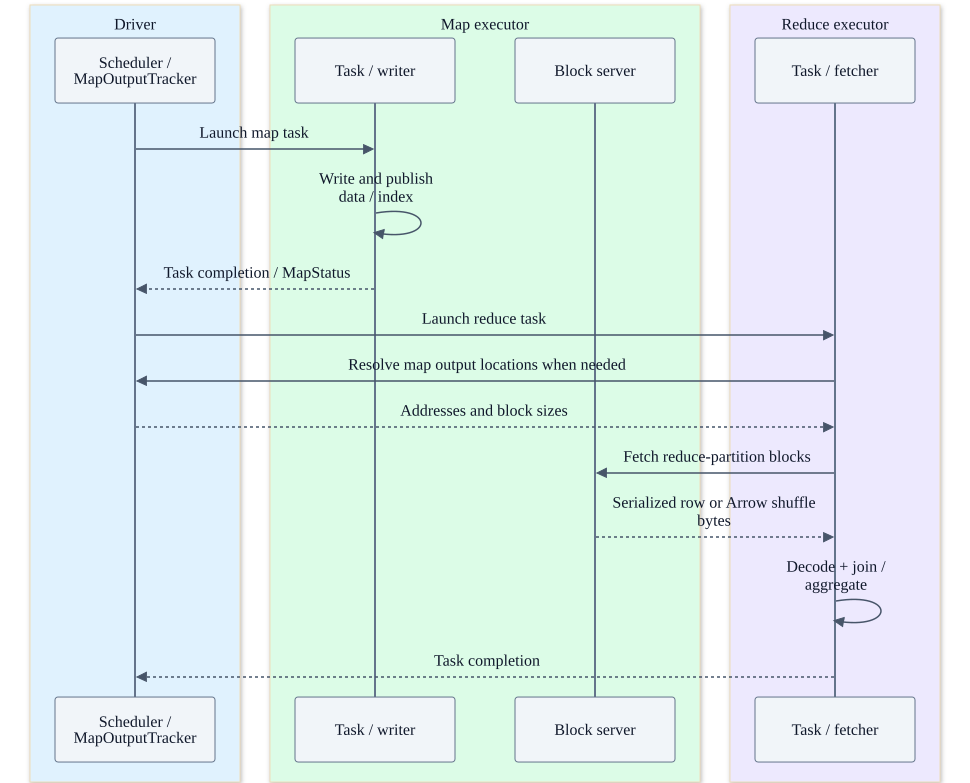
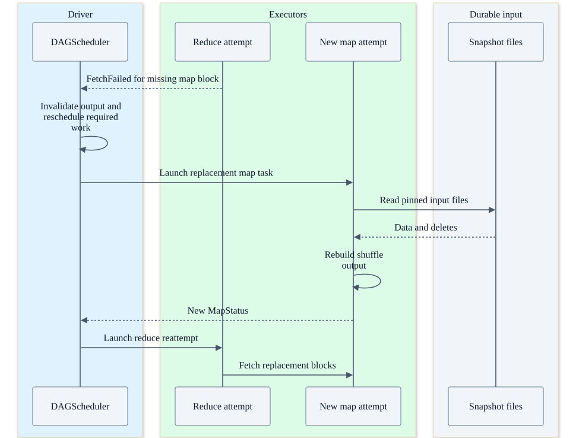

Chapter 28 · Source-backed batch execution
Shuffle and joins: Spark JVM versus Comet
Separate the join algorithm, partitioning topology, wire format and implementation language. They are different design decisions, and the physical plan exposes only part of each.
Four choices that should not be conflated
| Choice | Examples | Independent question |
|---|---|---|
| Join algorithm | Hash join, sort-merge join, nested-loop fallback | How are matching keys found inside one task? |
| Distribution | Broadcast build side; shuffle both inputs; reuse existing partitioning | How do matching records reach the same task? |
| Representation / wire format | UnsafeRows; Arrow batches; compressed shuffle frames | What is buffered and transported? |
| Execution implementation | JVM generated code; native Rust/DataFusion | Which runtime executes the local operators? |
A Comet sort-merge join is still a sort-merge join. A Spark hash join is not necessarily a shuffle join. “Native shuffle” does not mean a second native cluster scheduler or bypassing Spark’s network subsystem.
Join choice has two layers
Simplified decision model, not an exact ordering of every Spark hint or fallback rule. Spark chooses distribution and join strategy; Comet validates and translates eligible operators.


Why shuffle exists: ownership of matching keys
Suppose orders contain customer keys [7, 2, 7] and customer contains [2, 7]. For a partitioned equi-join, both sides use compatible expressions/types/hash semantics and the same logical partitioning so all key-7 records reach the same join partition. hash(key) mod N is an intuition, not the exact Spark hash implementation for every data type. Do not substitute an arbitrary Rust hash function.
Hash partitioning gives co-location, not sorted order. SortMergeJoin additionally requires ascending join-key order on both inputs; EnsureRequirements inserts local sorts where missing. Changing the next join key often requires another exchange. Already-satisfied distribution, broadcast or recognized storage partitioning can avoid one, but table layout alone is insufficient.
For duplicate key 7, two left rows and three right rows produce six inner-join pairs before a residual condition filters them. A semi-join emits each qualifying left row once; an anti-join emits left rows with no qualifying match. Outer joins also emit preserved unmatched rows with nulls. Normal equality does not match NULL to NULL; null-safe equality and null-aware NOT IN need distinct handling.
Path A: ordinary Spark JVM shuffle
Ordinary Spark row shuffle and sort-merge join
The shuffle groups records by reduce partition. Separate SortExec operators establish join-key order within each reducer input.


ShuffleExchangeExecprepares a dependency with required partitioning, a row serializer and metrics. Child operators supply rows, possibly after ColumnarToRow.- Spark’s sort shuffle machinery chooses an appropriate writer (bypass, serialized/unsafe, or general sort path). Rows are assigned reduce-partition IDs, buffered and spilled as needed.
- The writer publishes local map-output data and index information. A map output contains ranges for reduce partitions; a reduce partition can fetch ranges from many map tasks.
- MapStatus carries locations/sizes, not the full dataset, to scheduling/map-output tracking. Reduce tasks fetch the necessary blocks, decode rows and execute downstream operators.
- For SMJ, independent SortExec work establishes join-key order, possibly with spill. “Sort shuffle” refers to organizing shuffle output, not satisfying arbitrary SQL ORDER BY.
The driver is in the control path, not a central router for every shuffle row. Local fetch can avoid remote transfer; remote fetch uses Spark’s block-transfer client/server and configured limits. Deployment may use an external shuffle service or another supported shuffle system.
Path B: Comet native shuffle
Comet native shuffle: columnar compute, Spark transport
Inspected source path: the native producer subtree can be fused into ShuffleWriter. Spark retains scheduling, map-output metadata and block transport.


In the inspected pin, a CometNativeShuffle exchange can create a thin input RDD carrying a native producer context. CometNativeShuffleWriter puts ShuffleWriter above the eligible native subtree, injects partition inputs and drains its execution. The native side partitions Arrow data, encodes/compresses shuffle frames and spills/writes local output. If the child is not a native subtree, a batch-input bridge is used instead; fusion is not unconditional.
The local partition writer stages per-partition output and spills when required; finalization produces partition-contiguous output with an offset array. The JVM writer derives partition lengths, commits data/index metadata through Spark’s resolver and returns MapStatus. Publication is attempt output management, not an Iceberg snapshot commit.
Reducers still discover map locations and fetch blocks through Spark. With direct native shuffle reading enabled and eligible, compressed blocks enter native ShuffleScan. Another path decodes to JVM-visible Arrow-backed ColumnarBatch and feeds a native consumer through Arrow FFI. These are representation/ownership choices within Spark task execution, not an executor-to-executor JNI call.
Path C: Comet JVM columnar shuffle
Comet JVM columnar shuffle: rows can exist in the middle
Columnar describes the shuffle payload and decoded batches here; it does not promise a row-free producer path. This diagram describes inspected source, not an additional atlas capture.


CometColumnarShuffle calls child.execute() in the inspected exchange implementation. If the child is a native columnar node, its row execution wrapper converts output to rows. JVM machinery determines partitions and stores UnsafeRows/pointers; native encoding produces the Arrow-oriented shuffle payload. The reducer uses the Comet block reader and decoder.
This path can support situations unsuitable for the native producer path, but an extra batch → row → encoded batch route can cost CPU and memory. The physical label CometColumnarExchange must not be explained as proof of a row-free pipeline. The 88 atlas captures use native exchanges where shown; this JVM-shuffle path was source-inspected, not separately benchmarked here.
spark.comet.shuffle.mode supports native/jvm/auto in the inspected source, with auto preferring native when eligible. The experimental force-shuffled-hash-join switch is a separate choice and defaults off. Never change shuffle mode and join algorithm together and attribute the entire timing difference to one.
Networking, threads and storage
Who sends what during a shuffle
Illustrative ordinary local-disk shuffle. A deployed external shuffle service may serve blocks instead. Result metadata goes to the driver; shuffle payloads travel between workers.


| Boundary | Payload / ownership | Not this |
|---|---|---|
| Driver → executor RPC | Task description, serialized execution closure and scheduling control | One RPC per operator or row |
| Executor task → JNI | Native plan/context, input handles and batch/FFI interfaces | Remote Rust service call |
| Executor → object store | Metadata/file reads and ranges through configured FileIO | Driver forwarding all Parquet bytes |
| Map task → local disk | Shuffle data/index, temporary output and spill files | Durable table snapshot or streaming checkpoint |
| Map output tracking | Block locations and sizes for downstream reads | The shuffle dataset itself |
| Reducer → block server | Fetch block bytes, with transport flow control/retries | SQL join-key negotiation between all workers |
| Broadcast exchange → driver → workers | Build-side materialization and broadcast distribution | Same topology as partitioned shuffle |
An executor JVM has RPC/network machinery and a task pool; several task threads may concurrently own native contexts. Native I/O and execution can also use runtime threads. One physical operator is not one dedicated Java thread. One task does not imply one file, and one exchange does not imply one permanent pod.
For N maps and R reduce partitions, the logical fan-out can approach N×R block ranges. That is not necessarily N×R physical files: consolidated data/index layouts and batching change file and request counts. Larger R shrinks average partitions but raises metadata, scheduling, fetch and small-block overhead.
Hash joins: build, probe, duplicates and memory
| Variant | Distribution | Local execution | Main risk |
|---|---|---|---|
| Spark BroadcastHashJoinExec | Broadcast build; keep probe partitioning | Broadcast HashedRelation; probe with generated/interpreted row logic | Driver/build materialization, executor memory, timeout and stale size estimates |
| Spark ShuffledHashJoinExec | Both sides co-partitioned | zipPartitions; build one local HashedRelation per task and probe | One skewed build partition can exhaust memory |
| CometBroadcastHashJoin | Broadcast serialized Arrow build batches | Native DataFusion hash join consumes task-aligned build/probe input | Broadcast replication plus native build memory; do not assume one globally shared hash table |
| CometHashJoin | Co-partitioned task inputs | Native HashJoinExec with keyed build/probe and residual JoinFilter | Memory, duplicate expansion, skew and version-specific spill support |
The inspected Spark SHJ builds its HashedRelation with task memory accounting and registers completion cleanup. BHJ obtains a read-only broadcast relation; duplicate keys can yield several rows for one probe. These are data structures, not external key-value services.
The Comet Rust planner translates keys, join type and optional condition to DataFusion. Ordinary partitioned joins use Partitioned mode. This means partition-local execution supplied by Spark; DataFusion does not initiate cluster-wide redistribution. Build-right translation may swap native inputs and restore output ordering. Null-aware anti-join uses CollectLeft mode to preserve global null/empty semantics in the inspected implementation.
Do not promise automatic disk spill for every hash-join implementation/version. A configured memory budget does not guarantee an arbitrarily large build table succeeds. Verify the exact runtime’s join memory behavior and tests before treating hash joins as spill-safe.
Sort-merge joins: what is actually sorted?
Both inputs must be co-partitioned by compatible equality keys and sorted locally by those keys. The merge scanner advances the smaller key, buffers a matching run when needed and emits valid combinations. With left [2,7a,7b] and right [2,7x,7y,9], key 2 matches once and key 7 yields four pairs. An inequality residual can reject some pairs without changing the equi-key distribution.
Spark’s SortMergeJoinExec declares child ordering and uses a partition evaluator/scanner. Its match buffering has memory/spill thresholds. Separate external sorts can spill too. Comet’s planner builds native SortMergeJoinExec with join keys, JoinFilter, sort options and Spark-compatible null behavior; it does not simply rename a hash join.
SMJ often handles large sortable inputs more predictably through external sorting, but pays shuffle and sort cost. SHJ can remove sorts if a build partition fits. The inspected opt-in Comet RewriteJoin can replace eligible SMJ with hash join and remove sort children, subject to join/build-side limitations. That setting was not enabled for this atlas. A hypothetical SHJ tree must not be substituted for the captured SMJ tree.
Broadcast: fewer repartitions, different bottleneck
Broadcast is a different topology
Unlike ordinary shuffle, broadcast exchange collects build-side data at the driver. Spark distributes a HashedRelation; Comet distributes serialized Arrow batches for native consumption.


Spark’s broadcast exchange collects/builds the relation at the driver and distributes it using Spark broadcast. Comet’s exchange collects serialized columnar batches, checks limits, coalesces/publishes batches and aligns broadcast input with consumer partitions. Native tasks consume this build side to execute the join.
If build bytes are B and E executors consume them, replicated storage/traffic is roughly proportional to B×E, with actual broadcast distribution and caching changing the transfer pattern. Partitioned shuffle moves both input sides but avoids replicating the entire build relation to every consumer. The driver’s build memory and timeout can fail a broadcast even when probe-side processing is fast.
The atlas normal mode uses a 10 MiB threshold; it is a choice based on estimated plan size, not a universal measured input-size limit. Threshold −1 disables ordinary size-based automatic broadcast selection, but does not negate semantic special cases or explicit hints. Q16 is the concrete counterexample. Q2 also shows that normal mode need not be all-broadcast.
Q3: the useful two-join walkthrough
Q3 with threshold −1: change the partition key twice
Reduced topology from the captured plans, not every Project/Filter node. Four join-input exchanges feed two sort-merge joins. Grouping can reuse the order-key distribution.


Normal capture: broadcast joins avoid join-input repartitioning for their probe sides. Later aggregation/top-N work can still introduce distributed work; “broadcast joins” is not “no shuffle anywhere.”
Threshold −1: customer and orders are hash-partitioned and sorted by customer key for the first join. The intermediate result is then repartitioned/sorted by order key, as is lineitem, for the second join. Four join-input exchanges serve two joins. In this captured shape, order-key partitioning can satisfy grouping requirements, so do not draw an extra aggregate exchange merely because another aggregate node appears.
Spark JVM shows ColumnarToRow after scans and row SortMergeJoin nodes. Comet shows native scans, CometSort/Exchange/SortMergeJoin and a row-facing root conversion. The topology remains recognizable; the processing representation and local implementation differ.
Read all Q3 operator arguments. Q9 is the larger five-join case; Q18 illustrates semi-joins and reuse.
Failures, retry and durability
Lost shuffle is recomputed; it is not a database commit
Task attempts are retryable work. Missing blocks can invalidate map outputs and cause stage recomputation. The input snapshot and files must remain readable.


| Failure | Expected recovery layer | Limit / caveat |
|---|---|---|
| Task exception or eligible transient read/fetch error | Client retries and/or Spark task retry policy | A deterministic unsupported expression or corrupt file can fail repeatedly. |
| Executor lost with local shuffle blocks | Spark invalidates unavailable map output and recomputes required stages | External shuffle service or shuffle tracking changes availability; native code does not make local disk replicated. |
| Native memory exhaustion | Task/query fails; Spark can retry according to policy | Retrying the same skewed partition with the same memory may fail again. |
| Native crash taking down executor | Spark observes executor loss and reschedules work | JNI shares the process; it is not an isolation boundary. |
| Driver lost | Application-level restart/recovery policy | An ordinary batch query has no automatic Structured Streaming checkpoint equivalent. |
| Snapshot data deleted before recomputation | Input cannot be reconstructed from missing files | Retention/expiration policy must preserve files required by active reads and retry. |
| Task retries while writing an external sink | Sink-specific commit protocol and idempotence | A correct SELECT/shuffle does not establish exactly-once side effects. Iceberg writes need their own commit path. |
These are batch SELECT plans, not Structured Streaming plans. Shuffle files are disposable intermediate state; Iceberg’s snapshot references and data/delete files are the durable input. Do not label map-output publication a transaction checkpoint or claim native compute changes Iceberg’s durability semantics.
Throughput, latency and memory: diagnose the bottleneck
| Design choice | Can help | Can hurt / inspect |
|---|---|---|
| Project/filter earlier | Less decode, join state and shuffle width | Pushdown must preserve semantics; some predicates remain residual. Inspect scan bytes and rows. |
| Broadcast a small relation | Avoid large probe repartition/sort | Driver build, replicated memory, size estimate errors; inspect broadcast bytes/time. |
| Hash instead of merge join | Avoid local sorting | Build memory and skew; inspect maximum partition, not only average. |
| More shuffle partitions | Smaller task working sets, more parallelism | More tasks/blocks/overhead; eight is only this fixture’s setting. |
| Larger batches | Amortize JNI/function calls | Higher live memory, latency to first batch and cache pressure. |
| Compression | Less disk/network traffic | CPU and decompression cost; measure codec and data compressibility. |
| More concurrent tasks | Utilize CPU and I/O | Each task has live native/JVM/shuffle state; process memory is shared. |
| AQE | Runtime coalescing, skew handling and join changes where supported | Initial plan differs from final plan; compare equivalent settings and final executed plans. |
| All-native eligible region | Avoid repeated representation bridges | One unsupported operator can split regions; inspect fallback reasons and transitions. |
| Spill | Bound some operator working sets | Extra disk read/write, merge passes and long-tail tasks; not all operators spill identically. |
A rough capacity model is process memory ≈ JVM heap + shared native state + concurrent tasks × per-task native/row/shuffle working set + network/direct buffers. It is a budgeting model, not an exact allocator equation. Throughput is often limited by storage decode, shuffle network/disk, a skewed reducer or output consumption—not by JNI alone.
Measure scan bytes/rows, shuffle read/write bytes, spill, peak memory, task duration distribution, fetch wait, sort/build time and conversion boundaries. Compare output schema and a deterministic multiset digest before speed. Keep snapshot, query text, AQE, join mode, memory, partitions, warmups and cache state fixed. This guide reports no new speedup.
The presentation shortcut
Exchange = where records meet. Sort = in what order they arrive. Hash table = how matches are found. Arrow = how values are laid out. JNI = process-local boundary. Spark = distribution and retry. Iceberg = durable table state.
When someone asks “is Comet faster because it has native shuffle?”, first show the actual plan: same join algorithm? same build side? same partition count? same scan reader? same conversions? Then explain the measured bottleneck. A different tree is a different execution experiment.
Pinned implementation and inspected tests
Excerpts are from immutable local Git pins, not dirty working files. Spark links use its source pin. A Comet public link is included only when the complete file matches the public upstream parent 786bbc8fd630abfd0b29bdaffea6168f9f228863 byte-for-byte; otherwise the local pinned excerpt and file SHA-256 remain the evidence. The local merge pin is not assumed published. Apache source excerpts are under Apache License 2.0.
spark-launch · CoarseGrainedSchedulerBackend.scala:457
spark/core/src/main/scala/org/apache/spark/scheduler/cluster/CoarseGrainedSchedulerBackend.scala
Source pin f9358a5587a2d512c5cf08ba4b10d60007c93f6e · file SHA-256 898dee7cd8d82533d49bdfa20d397cb09e349affa924c23ae118272d244ec77b
457 private def launchTasks(tasks: Seq[Seq[TaskDescription]]): Unit = {
458 for (task <- tasks.flatten) {
459 val serializedTask = TaskDescription.encode(task)
460 if (serializedTask.limit() >= maxRpcMessageSize) {
461 Option(scheduler.taskIdToTaskSetManager.get(task.taskId)).foreach { taskSetMgr =>
462 try {
463 var msg = "Serialized task %s:%d was %d bytes, which exceeds max allowed: " +
464 s"${RPC_MESSAGE_MAX_SIZE.key} (%d bytes). Consider increasing " +
465 s"${RPC_MESSAGE_MAX_SIZE.key} or using broadcast variables for large values."
466 msg = msg.format(task.taskId, task.index, serializedTask.limit(), maxRpcMessageSize)
467 taskSetMgr.abort(msg)
468 } catch {
469 case e: Exception => logError("Exception in error callback", e)
470 }
471 }
472 }
473 else {
474 val executorData = executorDataMap(task.executorId)
475 // Do resources allocation here. The allocated resources will get released after the task
476 // finishes.
477 executorData.freeCores -= task.cpus
478 task.resources.foreach { case (rName, addressAmounts) =>
479 executorData.resourcesInfo(rName).acquire(addressAmounts)
480 }
481 logDebug(s"Launching task ${task.taskId} on executor id: ${task.executorId} hostname: " +
482 s"${executorData.executorHost}.")
483
484 executorData.executorEndpoint.send(LaunchTask(new SerializableBuffer(serializedTask)))
485 }
486 }
487 }
488
489 // Remove a disconnected executor from the cluster
490 private def removeExecutor(executorId: String, reason: ExecutorLossReason): Unit = {spark-strategy · SparkStrategies.scala:253
spark/sql/core/src/main/scala/org/apache/spark/sql/execution/SparkStrategies.scala
Source pin f9358a5587a2d512c5cf08ba4b10d60007c93f6e · file SHA-256 6d94319033a2dad643f2be39f4a2124f09f8bf60b961e84f0882320a89cbe25c
253 def createBroadcastHashJoin(onlyLookingAtHint: Boolean) = {
254 if (hashJoinSupport) {
255 val buildSide = getBroadcastBuildSide(j, onlyLookingAtHint, conf)
256 checkHintBuildSide(onlyLookingAtHint, buildSide, joinType, hint, true)
257 buildSide.map {
258 buildSide =>
259 Seq(joins.BroadcastHashJoinExec(
260 leftKeys,
261 rightKeys,
262 joinType,
263 buildSide,
264 nonEquiCond,
265 planLater(left),
266 planLater(right)))
267 }
268 } else {
269 None
270 }
271 }
272
273 def createShuffleHashJoin(onlyLookingAtHint: Boolean) = {
274 if (hashJoinSupport) {
275 val buildSide = getShuffleHashJoinBuildSide(j, onlyLookingAtHint, conf)
276 checkHintBuildSide(onlyLookingAtHint, buildSide, joinType, hint, false)
277 buildSide.map {
278 buildSide =>
279 Seq(joins.ShuffledHashJoinExec(
280 leftKeys,
281 rightKeys,
282 joinType,
283 buildSide,
284 nonEquiCond,
285 planLater(left),
286 planLater(right)))
287 }
288 } else {
289 None
290 }
291 }
292
293 def canMerge(joinType: JoinType): Boolean = joinType match {
294 case LeftSingle => false
295 case _ => true
296 }
297
298 def createSortMergeJoin() = {
299 if (canMerge(joinType) && RowOrdering.isOrderable(leftKeys)) {
300 Some(Seq(joins.SortMergeJoinExec(
301 leftKeys, rightKeys, joinType, nonEquiCond, planLater(left), planLater(right))))
302 } else {
303 None
304 }
305 }
306
307 def createCartesianProduct() = {
308 if (joinType.isInstanceOf[InnerLike] && !hintToNotBroadcastAndReplicate(hint)) {
309 // `CartesianProductExec` can't implicitly evaluate equal join condition, here we should
310 // pass the original condition which includes both equal and non-equal conditions.
311 Some(Seq(joins.CartesianProductExec(planLater(left), planLater(right), j.condition)))
312 } else {
313 None
314 }
315 }
316
317 def createJoinWithoutHint() = {
318 createBroadcastHashJoin(false)
319 .orElse(createShuffleHashJoin(false))
320 .orElse(createSortMergeJoin())
321 .orElse(createCartesianProduct())
322 .getOrElse {
323 // This join could be very slow or OOM
324 // Build the smaller side unless the join requires a particular build side
325 // (e.g. NO_BROADCAST_AND_REPLICATION hint)
326 val requiredBuildSide = getBroadcastNestedLoopJoinBuildSide(hint, joinType)
327 val buildSide = requiredBuildSide.getOrElse(getSmallerSide(left, right))
328 Seq(joins.BroadcastNestedLoopJoinExec(
329 planLater(left), planLater(right), buildSide, joinType, j.condition))
330 }
331 }
332
333 if (hint.isEmpty) {
334 createJoinWithoutHint()
335 } else {
336 createBroadcastHashJoin(true)
337 .orElse { if (hintToSortMergeJoin(hint)) createSortMergeJoin() else None }
338 .orElse(createShuffleHashJoin(true))
339 .orElse { if (hintToShuffleReplicateNL(hint)) createCartesianProduct() else None }
340 .getOrElse(createJoinWithoutHint())
341 }
342
343 case j @ ExtractSingleColumnNullAwareAntiJoin(leftKeys, rightKeys)
344 if canPlanAsBroadcastHashJoin(j, conf) =>
345 Seq(joins.BroadcastHashJoinExec(leftKeys, rightKeys, LeftAnti, BuildRight,
346 None, planLater(j.left), planLater(j.right), isNullAwareAntiJoin = true))
347
348 // If it is not an equi-join, we first look at the join hints w.r.t. the following order:
349 // 1. broadcast hint: pick broadcast nested loop join. If both sides have the broadcast
350 // hints, choose the smaller side (based on stats) to broadcast for inner and full joins,
351 // choose the left side for right join, and choose right side for left join.
352 // 2. shuffle replicate NL hint: pick cartesian product if join type is inner like.
353 //
354 // If there is no hint or the hints are not applicable, we follow these rules one by one:
355 // 1. Pick broadcast nested loop join if one side is small enough to broadcast. If only left
356 // side is broadcast-able and it's left join, or only right side is broadcast-able and
357 // it's right join, we skip this rule. If both sides are small, broadcasts the smaller
358 // side for inner and full joins, broadcasts the left side for right join, and broadcasts
359 // right side for left join.
360 // 2. Pick cartesian product if join type is inner like.
361 // 3. Pick broadcast nested loop join as the final solution. It may OOM but we don't have
362 // other choice. It broadcasts the smaller side for inner and full joins, broadcasts thespark-requirements · EnsureRequirements.scala:65
spark/sql/core/src/main/scala/org/apache/spark/sql/execution/exchange/EnsureRequirements.scala
Source pin f9358a5587a2d512c5cf08ba4b10d60007c93f6e · file SHA-256 ff1531b239784de4263049bc7aebc32e7eb33171a66f51a4bbf66e9554d02f52
65 private def ensureDistributionAndOrdering(
66 parent: Option[SparkPlan],
67 originalChildren: Seq[SparkPlan],
68 requiredChildDistributions: Seq[Distribution],
69 requiredChildOrderings: Seq[Seq[SortOrder]],
70 shuffleOrigin: ShuffleOrigin): Seq[SparkPlan] = {
71 assert(requiredChildDistributions.length == originalChildren.length)
72 assert(requiredChildOrderings.length == originalChildren.length)
73
74 // What each child has to satisfy to line up with its siblings, in child order, and nothing for
75 // a child that answers for itself. Only a `ClusteredDistribution` asks to be co-partitioned,
76 // and only against another one, so a lone clustered child is not in here either: it stands
77 // alone like a child that wants a broadcast or nothing.
78 val clustered = requiredChildDistributions.map {
79 case required: ClusteredDistribution => Some(required)
80 case _ => None
81 }
82 val isCoPartitioned = clustered.count(_.isDefined) > 1
83 val coPartitioned: Seq[Option[ClusteredDistribution]] =
84 if (isCoPartitioned) clustered else Seq.fill(clustered.length)(None)
85
86 // Two paths, kept apart. A child that has to line up with another cannot be resolved on its
87 // own. Whether it needs a `GroupPartitionsExec`, and on which keys, depends on what the other
88 // side turns out to offer. So this loop resolves only the children that answer for themselves,
89 // and `coPartitionChildren` owns the rest end to end.
90 val resolved = originalChildren.lazyZip(requiredChildDistributions).lazyZip(coPartitioned).map {
91 case (child, _, Some(_)) => child
92 case (child, distribution, None) =>
93 resolveChild(child, distribution, shuffleOrigin)
94 }
95
96 val distributed = if (isCoPartitioned) {
97 coPartitionChildren(parent, resolved, coPartitioned, shuffleOrigin)
98 } else {
99 resolved
100 }
101
102 // Now that we've performed any necessary shuffles, add sorts to guarantee output orderings:
103 distributed.zip(requiredChildOrderings).map { case (child, requiredOrdering) =>
104 // If child.outputOrdering already satisfies the requiredOrdering, we do not need to sort.
105 if (SortOrder.orderingSatisfies(child.outputOrdering, requiredOrdering)) {
106 child
107 } else {
108 // Before adding a SortExec, check whether a GroupPartitionsExec anywhere in the child
109 // subtree can self-satisfy via sorted merge. tryEnableSortedMerge generates all alternative
110 // plans where one or more GPEs have sorted merge enabled; we take the first one whose
111 // outputOrdering satisfies the requirement.
112 tryEnableSortedMerge(child)
113 .find(newChild => SortOrder.orderingSatisfies(newChild.outputOrdering, requiredOrdering))
114 .getOrElse(SortExec(requiredOrdering, global = false, child = child))
115 }
116 }
117 }
118
119 /**
120 * What `child` needs to satisfy `distribution` on its own: nothing, a [[GroupPartitionsExec]], a
121 * broadcast, or a shuffle.
122 */
123 private def resolveChild(
124 child: SparkPlan,
125 distribution: Distribution,
126 shuffleOrigin: ShuffleOrigin): SparkPlan = {
127 // Ask what the child's partitioning still needs to satisfy the distribution
128 val (otherSatisfies, keyed) =
129 splitKeyedPartitionings(child.outputPartitioning, distribution)
130
131 // If a non-KeyedPartitioning already satisfies, no changes needed
132 if (otherSatisfies) {
133 child
134 } else {
135 keyed match {
136 case Some(resolution) =>
137 (distribution, resolution) match {
138 case (o: OrderedDistribution, _) =>
139 // OrderedDistribution requires grouped KeyedPartitioning with sorted keys
140 // according to the distribution's ordering.
141 val satisfyingKeyedPartitioning = resolution.fold(identity, _._1)
142 // The single-column invariant in KeyedPartitioning.supportsExpressions guarantees
143 // one attribute per partition expression.
144 val attrs = satisfyingKeyedPartitioning.expressions.flatMap(_.references)
145 val keyRowOrdering = RowOrdering.create(o.ordering, attrs)
146 val keyOrdering = keyRowOrdering.on((t: InternalRowComparableWrapper) => t.row)
147 val keys = satisfyingKeyedPartitioning.partitionKeys
148 // An empty zip is vacuously sorted, which is the answer for a single key.
149 if (keys.zip(keys.drop(1)).forall { case (k1, k2) => keyOrdering.lteq(k1, k2) }) {
150 child
151 } else {
152 // Use distributePartitions to spread splits across expected partitions
153 val sortedGroupedKeys = keys
154 .groupBy(identity).view.mapValues(_.size)
155 .toSeq.sortBy(_._1)(keyOrdering)
156 GroupPartitionsExec(child,
157 expectedPartitionKeys = Some(sortedGroupedKeys),
158 distributePartitions = true
159 )native-joins · planner.rs:2275
comet/native/core/src/execution/planner.rs
Source pin 184accac5b9cee6b761a6673c73c263adedef45e · file SHA-256 d34a13a524baf66aea3bcb4af659497725b74e27fe6765379ca03e2d88695e60
2275 let join = Arc::new(SortMergeJoinExec::try_new(
2276 Arc::clone(&left),
2277 Arc::clone(&right),
2278 join_on,
2279 join_params.join_filter,
2280 join_params.join_type,
2281 sort_options,
2282 // null doesn't equal to null in Spark join key. If the join key is
2283 // `EqualNullSafe`, Spark will rewrite it during planning.
2284 NullEquality::NullEqualsNothing,
2285 )?);
2286
2287 Ok((
2288 scans,
2289 shuffle_scans,
2290 Arc::new(SparkPlan::new(
2291 spark_plan.plan_id,
2292 join,
2293 vec![
2294 Arc::clone(&join_params.left),
2295 Arc::clone(&join_params.right),
2296 ],
2297 )),
2298 ))
2299 }
2300 OpStruct::HashJoin(join) => {
2301 let (mut join_params, scans, shuffle_scans) = self.parse_join_parameters(
2302 inputs,
2303 children,
2304 &join.left_join_keys,
2305 &join.right_join_keys,
2306 join.join_type,
2307 &join.condition,
2308 partition_count,
2309 )?;
2310
2311 // Reader attachment replaces the probe filter's child per execution.
2312 // Keep its metrics owned by the same Spark filter node.
2313 if join.dynamic_filter_enabled && !join.null_aware_anti_join {
2314 let probe = if join.build_side == BuildSide::BuildLeft as i32 {
2315 &mut join_params.right
2316 } else {
2317 &mut join_params.left
2318 };
2319 *probe = Self::prepare_probe_filter_for_runtime_reader(Arc::clone(probe));
2320 }
2321
2322 let left = Arc::clone(&join_params.left.native_plan);
2323 let right = Arc::clone(&join_params.right.native_plan);
2324
2325 // Null-aware anti-join must run in CollectLeft mode. In Partitioned mode
2326 // each partition only sees per-partition null/emptiness state, which can
2327 // produce wrong NOT IN results across partitions. DataFusion's JoinSelection
2328 // rewrites null-aware joins to CollectLeft for this reason, but Comet
2329 // executes the physical plan directly so we must pick the mode here.
2330 let partition_mode = if join.null_aware_anti_join {
2331 PartitionMode::CollectLeft
2332 } else {
2333 PartitionMode::Partitioned
2334 };
2335
2336 let hash_join = Arc::new(HashJoinExec::try_new(
2337 left,
2338 right,
2339 join_params.join_on,
2340 join_params.join_filter,
2341 &join_params.join_type,
2342 None,
2343 partition_mode,
2344 // null doesn't equal to null in Spark join key. If the join key is
2345 // `EqualNullSafe`, Spark will rewrite it during planning.
2346 NullEquality::NullEqualsNothing,
2347 join.null_aware_anti_join,
2348 )?);
2349
2350 // If the hash join is build right, we need to swap the left and right.
2351 // Exception: null-aware anti-join requires LeftAnti + build-right semantics
2352 // (which matches DataFusion's default), and swap_inputs would turn LeftAnti
2353 // into RightAnti, which DataFusion rejects with null_aware=true.
2354 if join.build_side == BuildSide::BuildLeft as i32 || join.null_aware_anti_join {
2355 let hash_join = Self::apply_join_dynamic_filter(
2356 hash_join,
2357 join.dynamic_filter_enabled && !join.null_aware_anti_join,
2358 self.session_ctx.copied_config().options(),
2359 )?;
2360 Ok((
2361 scans,
2362 shuffle_scans,
2363 Arc::new(SparkPlan::new(
2364 spark_plan.plan_id,
2365 hash_join,
2366 vec![join_params.left, join_params.right],
2367 )),
2368 ))
2369 } else {
2370 let swapped_hash_join =
2371 hash_join.as_ref().swap_inputs(PartitionMode::Partitioned)?;
2372 let swapped_hash_join = Self::apply_join_dynamic_filter(
2373 swapped_hash_join,
2374 join.dynamic_filter_enabled,
2375 self.session_ctx.copied_config().options(),
2376 )?;
2377
2378 let mut additional_native_plans = vec![];
2379 if swapped_hash_join.is::<ProjectionExec>() {
2380 // a projection was added to the hash join
2381 additional_native_plans.push(Arc::clone(swapped_hash_join.children()[0]));
2382 }
2383
2384 Ok((jvm-shuffle-input · CometShuffleExchangeExec.scala:135
Source pin 184accac5b9cee6b761a6673c73c263adedef45e · file SHA-256 7840f1726eab7a954799d950fa9b070401ce378fddb25961dbf4089a20b3483f
135 @transient lazy val inputRDD: RDD[_] = if (shuffleType == CometNativeShuffle) {
136 nativeChildContext match {
137 case Some(ctx) =>
138 new CometNativeShuffleInputRDD(
139 sparkContext,
140 ctx.inputs,
141 ctx.numPartitions,
142 ctx.shuffleScanIndices,
143 CometMetricNode(metrics, Seq(nativeChildMetricNode)),
144 ctx.perPartitionByKey,
145 positionalRoundRobin.isDefined)
146 case None =>
147 // Non-native child (e.g. CometSparkToColumnarExec): no subtree to inline. The dep gets
148 // built via the convenience overload below; we just need a real RDD of batches.
149 child.executeColumnar()
150 }
151 } else if (shuffleType == CometColumnarShuffle) {
152 // Row-based shuffle. CometNativeExec.doExecute wraps columnar output with
153 // ColumnarToRowExec; non-Comet children flow through directly.
154 child.execute()
155 } else {
156 throw new UnsupportedOperationException(
157 s"Unsupported shuffle type: ${shuffleType.getClass.getName}")
158 }
159
160 // 'mapOutputStatisticsFuture' is only needed when enable AQE.
161 @transient
162 override lazy val mapOutputStatisticsFuture: Future[MapOutputStatistics] = {
163 if (inputRDD.getNumPartitions == 0) {
164 Future.successful(null)
165 } else {
166 CometCelebornShuffleMaterialization.forDependency(shuffleDependency) match {
167 case Some(materialization) => materialization
168 case None => sparkContext.submitMapStage(shuffleDependency)
169 }
170 }
171 }
172
173 override def numMappers: Int = shuffleDependency.rdd.getNumPartitions
174
175 override def numPartitions: Int = shuffleDependency.partitioner.numPartitions
176rewrite-join · RewriteJoin.scala:35
comet/spark/src/main/scala/org/apache/comet/rules/RewriteJoin.scala
Source pin 184accac5b9cee6b761a6673c73c263adedef45e · file SHA-256 00a900fe84578d1efd3c090bb51233ae3bdc79296e6a9bd85587efe92053506a
35 object RewriteJoin extends JoinSelectionHelper {
36
37 private def getSmjBuildSide(join: SortMergeJoinExec): Option[BuildSide] = {
38 val leftBuildable = canBuildShuffledHashJoinLeft(join.joinType)
39 val rightBuildable = canBuildShuffledHashJoinRight(join.joinType)
40 if (!leftBuildable && !rightBuildable) {
41 return None
42 }
43 if (!leftBuildable) {
44 return Some(BuildRight)
45 }
46 if (!rightBuildable) {
47 return Some(BuildLeft)
48 }
49 val side = join.logicalLink
50 .flatMap {
51 case join: Join => Some(getOptimalBuildSide(join))
52 case _ => None
53 }
54 .getOrElse {
55 // If smj has no logical link, or its logical link is not a join,
56 // then we always choose left as build side.
57 BuildLeft
58 }
59 Some(side)
60 }
61
62 private def removeSort(plan: SparkPlan) = plan match {
63 case _: SortExec => plan.children.head
64 case _ => plan
65 }
66
67 def rewrite(plan: SparkPlan): SparkPlan = plan match {
68 case smj: SortMergeJoinExec =>
69 getSmjBuildSide(smj) match {
70 case Some(BuildRight) if smj.joinType == LeftSemi =>
71 // LeftSemi https://github.com/apache/datafusion-comet/issues/2667
72 withFallbackReason(
73 smj,
74 "Cannot rewrite SortMergeJoin to HashJoin: " +
75 s"BuildRight with ${smj.joinType} is not supported")
76 plan
77 case Some(buildSide) =>
78 ShuffledHashJoinExec(
79 smj.leftKeys,
80 smj.rightKeys,
81 smj.joinType,
82 buildSide,
83 smj.condition,
84 removeSort(smj.left),
85 removeSort(smj.right),
86 smj.isSkewJoin)
87 case _ => plan
88 }
89 case _ => plan
90 }
91
92 def getOptimalBuildSide(join: Join): BuildSide = {
93 val leftSize = join.left.stats.sizeInBytes
94 val rightSize = join.right.stats.sizeInBytes
95 val leftRowCount = join.left.stats.rowCount
96 val rightRowCount = join.right.stats.rowCount
97 if (leftSize == rightSize && rightRowCount.isDefined && leftRowCount.isDefined) {
98 if (rightRowCount.get <= leftRowCount.get) {
99 return BuildRight
100 }
101 return BuildLeft
102 }
103 if (rightSize <= leftSize) {
104 return BuildRight
105 }
106 BuildLeft
107 }
108 }
109join-test · CometJoinSuite.scala:285
comet/spark/src/test/scala/org/apache/comet/exec/CometJoinSuite.scala
Source pin 184accac5b9cee6b761a6673c73c263adedef45e · file SHA-256 c1c3f53be4098d0af8d94c525ab4b18c8b233b6defeabced0b4f12e17947f1ad
285 test("SortMergeJoin with nullable TimestampType key runs natively") {
286 withSQLConf(
287 SQLConf.ADAPTIVE_AUTO_BROADCASTJOIN_THRESHOLD.key -> "-1",
288 SQLConf.AUTO_BROADCASTJOIN_THRESHOLD.key -> "-1",
289 SQLConf.PREFER_SORTMERGEJOIN.key -> "true") {
290 withTable("t1", "t2") {
291 sql("CREATE TABLE t1(id INT, time TIMESTAMP) USING PARQUET")
292 sql(
293 "INSERT OVERWRITE t1 VALUES " +
294 "(1, timestamp'2019-01-01 11:11:11'), " +
295 "(2, CAST(NULL AS TIMESTAMP)), " +
296 "(3, timestamp'2020-05-05 05:05:05')")
297
298 sql("CREATE TABLE t2(id INT, time TIMESTAMP) USING PARQUET")
299 sql(
300 "INSERT OVERWRITE t2 VALUES " +
301 "(10, timestamp'2019-01-01 11:11:11'), " +
302 "(20, CAST(NULL AS TIMESTAMP)), " +
303 "(30, timestamp'2022-02-02 02:02:02')")
304
305 // Inner join: NULL = NULL must not match in Spark semantics.
306 checkSparkAnswerAndOperator(
307 sql("SELECT * FROM t1 JOIN t2 ON t1.time = t2.time"),
308 Seq(classOf[CometSortMergeJoinExec]))
309
310 // Full outer join: NULL-keyed rows from both sides surface as unmatched.
311 checkSparkAnswerAndOperator(
312 sql("SELECT * FROM t1 FULL OUTER JOIN t2 ON t1.time = t2.time"),
313 Seq(classOf[CometSortMergeJoinExec]))
314 }
315 }
316 }
317
318 test("SortMergeJoin with TimestampType key across mixed write-time session timezones") {
319 // TimestampType is an instant (UTC microseconds); only the parsing of literalspark-exchange · ShuffleExchangeExec.scala:359
spark/sql/core/src/main/scala/org/apache/spark/sql/execution/exchange/ShuffleExchangeExec.scala
Source pin f9358a5587a2d512c5cf08ba4b10d60007c93f6e · file SHA-256 03d270cbe3bda664f9217cf6a5a1d311b37245b232eb72763db8f73bcc2284d3
359 def prepareShuffleDependency(
360 rdd: RDD[InternalRow],
361 outputAttributes: Seq[Attribute],
362 newPartitioning: Partitioning,
363 serializer: Serializer,
364 writeMetrics: Map[String, SQLMetric],
365 pipelined: Boolean = false)
366 : ShuffleDependency[Int, InternalRow, InternalRow] = {
367 val part: Partitioner = newPartitioning match {
368 case RoundRobinPartitioning(numPartitions) => new HashPartitioner(numPartitions)
369 case HashPartitioning(_, n) =>
370 // For HashPartitioning, the partitioning key is already a valid partition ID, as we use
371 // `HashPartitioning.partitionIdExpression` to produce partitioning key.
372 new PartitionIdPassthrough(n)
373 case NullAwareHashPartitioning(_, n) =>
374 // The null-aware extractor below produces partition IDs directly:
375 // Pmod(hash, n) for non-NULL keys, and a round-robin counter for NULL keys.
376 new PartitionIdPassthrough(n)
377 case ShufflePartitionIdPassThrough(_, n) =>
378 // For ShufflePartitionIdPassThrough, the DirectShufflePartitionID expression directly
379 // produces partition IDs, so we use PartitionIdPassthrough to pass them through directly.
380 new PartitionIdPassthrough(n)
381 case RangePartitioning(sortingExpressions, numPartitions) =>
382 // Extract only fields used for sorting to avoid collecting large fields that does not
383 // affect sorting result when deciding partition bounds in RangePartitioner
384 val rddForSampling = rdd.mapPartitionsInternal { iter =>
385 val projection =
386 UnsafeProjection.create(sortingExpressions.map(_.child), outputAttributes)
387 val mutablePair = new MutablePair[InternalRow, Null]()
388 // Internally, RangePartitioner runs a job on the RDD that samples keys to compute
389 // partition bounds. To get accurate samples, we need to copy the mutable keys.
390 iter.map(row => mutablePair.update(projection(row).copy(), null))
391 }
392 // Construct ordering on extracted sort key.
393 val orderingAttributes = sortingExpressions.zipWithIndex.map { case (ord, i) =>
394 ord.copy(child = BoundReference(i, ord.dataType, ord.nullable))
395 }
396 implicit val ordering = new LazilyGeneratedOrdering(orderingAttributes)
397 new RangePartitioner(
398 numPartitions,
399 rddForSampling,
400 ascending = true,
401 samplePointsPerPartitionHint = SQLConf.get.rangeExchangeSampleSizePerPartition)
402 case SinglePartition => new ConstantPartitioner
403 case k: KeyedPartitioning =>
404 // `partitionKeys` is the physical layout its producer declared: partition `i` holds key
405 // `partitionKeys(i)`. Keep that order, whatever it is -- it need not be sorted, and
406 // re-deriving one here would disagree with the side this shuffle co-partitions with.
407 // Unique keys are a precondition, since each key gets exactly one partition;
408 // `KeyedShuffleSpec.canCreatePartitioning` is what refuses an ungrouped partitioning.
409 assert(k.isGrouped,
410 s"Expected a grouped KeyedPartitioning on ${k.expressions}, but got ${k.numPartitions} " +
411 "partition keys with duplicates among them")
412 // The map keys and the lookup keys produced by `getPartitionKeyExtractor` below are
413 // wrapped through the same `InternalRowComparableWrapper` factory over this
414 // partitioning's expression data types, so map lookups share the exact equivalence
415 // (`RowOrdering`, e.g. binary keys by content, -0.0 == 0.0, NaNs equal) that grouped and
416 // de-duplicated `partitionKeys`. Re-wrapping the stored keys, which were built at
417 // `keyDataTypes`, is what makes the two type lists agree, and a mismatch is silent:
418 // `KeyGroupedPartitioner.getPartition` answers a miss with the key's hash (SPARK-59054).
419 val wrapperFactory = InternalRowComparableWrapper
420 .getInternalRowComparableWrapperFactory(k.expressionDataTypes)
421 val valueMap = k.partitionKeys.map(key => wrapperFactory(key.row)).zipWithIndex
422 .toMap[Any, Int]
423 new KeyGroupedPartitioner(valueMap, k.numPartitions)
424 case _ => throw SparkException.internalError(s"Exchange not implemented for $newPartitioning")
425 // TODO: Handle BroadcastPartitioning.
426 }
427 def getPartitionKeyExtractor(): InternalRow => Any = newPartitioning match {
428 case RoundRobinPartitioning(numPartitions) =>
429 // Distributes elements evenly across output partitions, starting from a random partition.
430 // nextInt(numPartitions) implementation has a special case when bound is a power of 2,
431 // which is basically taking several highest bits from the initial seed, with only a
432 // minimal scrambling. Due to deterministic seed, using the generator only once,
433 // and lack of scrambling, the position values for power-of-two numPartitions always
434 // end up being almost the same regardless of the index. substantially scrambling the
435 // seed by hashing will help. Refer to SPARK-21782 for more details.
436 val partitionId = TaskContext.get().partitionId()
437 var position = new XORShiftRandom(partitionId).nextInt(numPartitions)
438 (row: InternalRow) => {
439 // The HashPartitioner will handle the `mod` by the number of partitions
440 position += 1
441 position
442 }
443 case h: HashPartitioning =>spark-manager · SortShuffleManager.scala:91
spark/core/src/main/scala/org/apache/spark/shuffle/sort/SortShuffleManager.scala
Source pin f9358a5587a2d512c5cf08ba4b10d60007c93f6e · file SHA-256 ef19684cbff7c6dc5b52820d5e1864e0607ca877386a7e5763238301c1f75765
91 override def registerShuffle[K, V, C](
92 shuffleId: Int,
93 dependency: ShuffleDependency[K, V, C]): ShuffleHandle = {
94 if (SortShuffleWriter.shouldBypassMergeSort(conf, dependency)) {
95 // If there are fewer than spark.shuffle.sort.bypassMergeThreshold partitions and we don't
96 // need map-side aggregation, then write numPartitions files directly and just concatenate
97 // them at the end. This avoids doing serialization and deserialization twice to merge
98 // together the spilled files, which would happen with the normal code path. The downside is
99 // having multiple files open at a time and thus more memory allocated to buffers.
100 new BypassMergeSortShuffleHandle[K, V](
101 shuffleId, dependency.asInstanceOf[ShuffleDependency[K, V, V]])
102 } else if (SortShuffleManager.canUseSerializedShuffle(dependency)) {
103 // Otherwise, try to buffer map outputs in a serialized form, since this is more efficient:
104 new SerializedShuffleHandle[K, V](
105 shuffleId, dependency.asInstanceOf[ShuffleDependency[K, V, V]])
106 } else {
107 // Otherwise, buffer map outputs in a deserialized form:
108 new BaseShuffleHandle(shuffleId, dependency)
109 }
110 }
111
112 /**
113 * Get a reader for a range of reduce partitions (startPartition to endPartition-1, inclusive) to
114 * read from a range of map outputs(startMapIndex to endMapIndex-1, inclusive).
115 * If endMapIndex=Int.MaxValue, the actual endMapIndex will be changed to the length of total map
116 * outputs of the shuffle in `getMapSizesByExecutorId`.
117 *
118 * Called on executors by reduce tasks.
119 */
120 override def getReader[K, C](
121 handle: ShuffleHandle,
122 startMapIndex: Int,
123 endMapIndex: Int,
124 startPartition: Int,
125 endPartition: Int,
126 context: TaskContext,
127 metrics: ShuffleReadMetricsReporter): ShuffleReader[K, C] = {
128 val baseShuffleHandle = handle.asInstanceOf[BaseShuffleHandle[K, _, C]]
129 val (blocksByAddress, canEnableBatchFetch) =
130 if (baseShuffleHandle.dependency.isShuffleMergeFinalizedMarked) {
131 val res = SparkEnv.get.mapOutputTracker.getPushBasedShuffleMapSizesByExecutorId(
132 handle.shuffleId, startMapIndex, endMapIndex, startPartition, endPartition)
133 (res.iter, res.enableBatchFetch)
134 } else {
135 val address = SparkEnv.get.mapOutputTracker.getMapSizesByExecutorId(
136 handle.shuffleId, startMapIndex, endMapIndex, startPartition, endPartition)
137 (address, true)
138 }
139 new BlockStoreShuffleReader(
140 handle.asInstanceOf[BaseShuffleHandle[K, _, C]], blocksByAddress, context, metrics,
141 shouldBatchFetch =
142 canEnableBatchFetch && canUseBatchFetch(startPartition, endPartition, context))
143 }
144
145 /** Get a writer for a given partition. Called on executors by map tasks. */
146 override def getWriter[K, V](
147 handle: ShuffleHandle,
148 mapId: Long,spark-fetch · ShuffleBlockFetcherIterator.scala:380
spark/core/src/main/scala/org/apache/spark/storage/ShuffleBlockFetcherIterator.scala
Source pin f9358a5587a2d512c5cf08ba4b10d60007c93f6e · file SHA-256 91ecfd6f73fe90854eb42c44ebe3b87b6dd1e43eafbcd5a20139a94b333294bb
380 shuffleClient.fetchBlocks(address.host, address.port, address.executorId, blockIds.toArray,
381 blockFetchingListener, this)
382 } else {
383 shuffleClient.fetchBlocks(address.host, address.port, address.executorId, blockIds.toArray,
384 blockFetchingListener, null)
385 }
386 }
387
388 /**
389 * This is called from initialize and also from the fallback which is triggered from
390 * [[PushBasedFetchHelper]].
391 */
392 private[this] def partitionBlocksByFetchMode(
393 blocksByAddress: Iterator[(BlockManagerId, collection.Seq[(BlockId, Long, Int)])],
394 localBlocks: mutable.LinkedHashSet[(BlockId, Int)],
395 hostLocalBlocksByExecutor:
396 mutable.LinkedHashMap[BlockManagerId, collection.Seq[(BlockId, Long, Int)]],
397 pushMergedLocalBlocks: mutable.LinkedHashSet[BlockId]): ArrayBuffer[FetchRequest] = {
398 logDebug(s"maxBytesInFlight: $maxBytesInFlight, targetRemoteRequestSize: "
399 + s"$targetRemoteRequestSize, maxBlocksInFlightPerAddress: $maxBlocksInFlightPerAddress")
400
401 // Partition to local, host-local, push-merged-local, remote (includes push-merged-remote)
402 // blocks.Remote blocks are further split into FetchRequests of size at most maxBytesInFlight
403 // in order to limit the amount of data in flight
404 val collectedRemoteRequests = new ArrayBuffer[FetchRequest]
405 var localBlockBytes = 0L
406 var hostLocalBlockBytes = 0L
407 var numHostLocalBlocks = 0
408 var pushMergedLocalBlockBytes = 0L
409 val prevNumBlocksToFetch = numBlocksToFetch
410
411 val fallback = FallbackStorage.FALLBACK_BLOCK_MANAGER_ID.executorId
412 val localExecIds = Set(blockManager.blockManagerId.executorId, fallback)
413 for ((address, blockInfos) <- blocksByAddress) {
414 checkBlockSizes(blockInfos)native-writer · CometNativeShuffleWriter.scala:111
Source pin 184accac5b9cee6b761a6673c73c263adedef45e · file SHA-256 099f390f552461e7d314039aefc8ba49e904baead3994b262086f73636a8c093
111 private def writeInternal(inputs: Iterator[Product2[K, V]]): Unit = {
112 val localOutput = if (remoteDestination.isEmpty) {
113 val resolver =
114 SparkEnv.get.shuffleManager.shuffleBlockResolver.asInstanceOf[IndexShuffleBlockResolver]
115 val dataFile = resolver.getDataFile(shuffleId, mapId)
116 Some(LocalShuffleOutput(resolver, dataFile.getPath.replace(".data", ".data.tmp")))
117 } else {
118 None
119 }
120
121 // The dep's _rdd is always a CometNativeShuffleInputRDD on this path. Pattern-match instead
122 // of asInstanceOf so a future RDD-layering change produces a clear error here rather than a
123 // bare ClassCastException deeper in the stack.
124 val shuffleInputIter = inputs match {
125 case it: CometNativeShuffleInputIterator => it
126 case other =>
127 throw new IllegalStateException(
128 "CometNativeShuffleWriter expects its input iterator to be a " +
129 "CometNativeShuffleInputIterator (produced by CometNativeShuffleInputRDD), got " +
130 s"${other.getClass.getName}")
131 }
132 val partitionIdx = shuffleInputIter.partitionIndex
133 val inputObjects = shuffleInputIter.inputObjects
134 val shuffleBlockIters = shuffleInputIter.shuffleBlockIterators
135
136 val unifiedPlan = localOutput match {
137 case Some(output) => buildUnifiedPlan(output.dataFile)
138 case None => buildUnifiedPlan("")
139 }
140 val ctx = spec.execContext
141 val finalNativePlan = if (ctx.commonByKey.nonEmpty) {
142 // This partition's plan-data slice rides on the input iterator's Partition object (populated
143 // in CometNativeShuffleInputRDD.getPartitions on the driver), not on the spec. The spec's
144 // execContext.perPartitionByKey is emptied in prepareNativeShuffleDependency so the full
145 // O(numPartitions) map stays out of the broadcast task binary.
146 //
147 // The unified plan differs per task (output paths), so there is no base plan cache entry
148 // here; scan lookup rides the source keys the driver embedded in childNativeOp's scans,
149 // and prepared commons are shared across this shuffle's map tasks via the shuffleId.
150 PlanDataInjector.injectPlanDataForShuffle(
151 shuffleId,
152 unifiedPlan,
153 ctx.commonByKey,
154 shuffleInputIter.planDataByKey)
155 } else {
156 unifiedPlan
157 }
158
159 val detailedMetrics = Seq(
160 "elapsed_compute",
161 "encode_time",
162 "repart_time",
163 "interleave_time",
164 "input_batches",
165 "spill_count",
166 "spilled_bytes",
167 "memory_spilled_bytes")
168 val metricsOutputRows = new SQLMetric("outputRows")
169 val metricsWriteTime = new SQLMetric("writeTime")
170 val shuffleWriterSQLMetrics = Map(
171 "output_rows" -> metricsOutputRows,
172 "data_size" -> metrics("dataSize"),
173 "write_time" -> metricsWriteTime) ++
174 metrics.filter { case (name, _) => detailedMetrics.contains(name) }
175
176 // ShuffleWriter metrics at the root; child's metric tree underneath so the SQL UI's per-node
177 // breakdown matches what the split-driver flow showed.
178 val nativeMetrics = CometMetricNode(shuffleWriterSQLMetrics, Seq(spec.childMetricNode))
179
180 // The leaf scans execute inside this writer's single plan rather than a separate native
181 // stage RDD, so the usual CometExecRDD.compute() bridge (operators.scala) never runs for
182 // them. Report their bytes/rows to the task's input metrics here instead.
183 if (ctx.hasScanInput) {
184 Option(context).foreach(nativeMetrics.reportScanInputMetrics)
185 }
186
187 val cometIter = new CometExecIterator(
188 CometExec.newIterId,
189 inputObjects,
190 outputAttributes.length,
191 CometExec.serializeNativePlan(finalNativePlan),
192 nativeMetrics,
193 numParts,
194 partitionIdx,
195 ctx.broadcastedHadoopConfForEncryption,
196 ctx.encryptedFilePaths,
197 shuffleBlockIters,
198 shufflePartitionPusher = remoteDestination.map(_.callback),
199 // Only a local destination publishes partition offsets; RSS reports lengths through its
200 // pusher instead.
201 capturePartitionOffsets = localOutput.isDefined)
202
203 // Register subqueries against the iterator id so native callbacks resolve them to values.
204 ctx.subqueries.foreach { sub =>
205 CometScalarSubquery.setSubquery(cometIter.id, sub)local-writer · local_partition_writer.rs:175
comet/native/shuffle/src/writers/local/local_partition_writer.rs
Source pin 184accac5b9cee6b761a6673c73c263adedef45e · file SHA-256 6a7455bc7e97245d1958209b8636bdd016eeb3100fe69a0872c8b7a34a7d9e6c
175 fn write<I>(
176 &mut self,
177 pid: usize,
178 iter: &mut I,
179 metrics: &ShufflePartitionerMetrics,
180 ) -> datafusion::common::Result<()>
181 where
182 I: Iterator<Item = datafusion::common::Result<RecordBatch>>,
183 {
184 match &mut self.data_output {
185 DataOutput::Single { writer, scratch } => {
186 if pid != 0 {
187 return Err(DataFusionError::Execution(
188 "LocalPartitionWriter single-partition output only supports partition 0."
189 .to_string(),
190 ));
191 }
192
193 // Stream batches through the long-lived writer so small batches keep
194 // coalescing across calls. Do not flush here: flushing also finalizes any
195 // partially coalesced batch, which would defeat cross-call coalescing and
196 // increase flush frequency. The single-partition writer is flushed once, in
197 // `finish_all`.
198 for batch in iter.by_ref() {
199 let batch = batch?;
200 writer.write(
201 &batch,
202 scratch,
203 &mut self.codec_context,
204 &metrics.encode_time,
205 &metrics.write_time,
206 )?;
207 }
208 }
209 DataOutput::Multi {
210 spill,
211 runtime,
212 recycled_buffer,
213 ..
214 } => {
215 spill.write(
216 pid,
217 iter,
218 &mut self.codec_context,
219 runtime,
220 metrics,
221 recycled_buffer,
222 )?;
223 }
224 }
225
226 Ok(())
227 }
228
229 fn finish_partition<I>(
230 &mut self,
231 pid: usize,
232 iter: &mut I,
233 metrics: &ShufflePartitionerMetrics,
234 ) -> datafusion::common::Result<()>
235 where
236 I: Iterator<Item = datafusion::common::Result<RecordBatch>>,
237 {
238 if pid as i32 - self.last_finish_pid != 1 {
239 return Err(DataFusionError::Execution(block-reader · CometBlockStoreShuffleReader.scala:59
Source pin 184accac5b9cee6b761a6673c73c263adedef45e · file SHA-256 96eef5aedc1b07c9f25f74810ffb3db5d21c939ccd4d5b9a6e9476af31244514
59 new ShuffleBlockFetcherIterator(
60 context,
61 blockManager.blockStoreClient,
62 blockManager,
63 mapOutputTracker,
64 // To tackle Scala issue between Seq and scala.collection.Seq
65 blocksByAddress.map(pair => (pair._1, pair._2.toSeq)),
66 (_, inputStream) => {
67 if (dep.shuffleType == CometColumnarShuffle) {
68 // Only columnar shuffle supports encryption
69 serializerManager.wrapForEncryption(inputStream)
70 } else {
71 inputStream
72 }
73 },
74 // Note: we use getSizeAsMb when no suffix is provided for backwards compatibility
75 SparkEnv.get.conf.get(config.REDUCER_MAX_SIZE_IN_FLIGHT) * 1024 * 1024,
76 SparkEnv.get.conf.get(config.REDUCER_MAX_REQS_IN_FLIGHT),
77 SparkEnv.get.conf.get(config.REDUCER_MAX_BLOCKS_IN_FLIGHT_PER_ADDRESS),
78 SparkEnv.get.conf.get(config.MAX_REMOTE_BLOCK_SIZE_FETCH_TO_MEM),
79 SparkEnv.get.conf.get(config.SHUFFLE_MAX_ATTEMPTS_ON_NETTY_OOM),
80 SparkEnv.get.conf.get(config.SHUFFLE_DETECT_CORRUPT),
81 SparkEnv.get.conf.get(config.SHUFFLE_DETECT_CORRUPT_MEMORY),
82 SparkEnv.get.conf.get(config.SHUFFLE_CHECKSUM_ENABLED),
83 SparkEnv.get.conf.get(config.SHUFFLE_CHECKSUM_ALGORITHM),
84 readMetrics,
85 fetchContinuousBlocksInBatch).toCompletionIterator
86 }
87
88 /** Read the combined key-values for this reduce task */
89 override def read(): Iterator[Product2[K, C]] = {
90 var currentReadIterator: NativeBatchDecoderIterator = null
91 val nativeLib = new Native()
92 val nativeUtil = new NativeUtil()
93 val tracingEnabled = CometConf.COMET_TRACING_ENABLED.get()
94
95 // Closes last read iterator and shared resources after the task is finished.
96 // We need to close read iterator during iterating input streams,
97 // instead of one callback per read iterator. Otherwise if there are too many
98 // read iterators, it may blow up the call stack and cause OOM.
99 context.addTaskCompletionListener[Unit] { _ =>
100 if (currentReadIterator != null) {
101 currentReadIterator.close()
102 }
103 nativeUtil.close()
104 }
105
106 val recordIter: Iterator[(Int, ColumnarBatch)] = fetchIterator
107 .flatMap(blockIdAndStream => {
108 if (currentReadIterator != null) {
109 currentReadIterator.close()
110 }
111 currentReadIterator = NativeBatchDecoderIterator(
112 blockIdAndStream._2,
113 dep.decodeTime,
114 nativeLib,
115 nativeUtil,
116 tracingEnabled)
117 currentReadIterator
118 })
119 .map(b => (0, b))
120
121 // Update the context task metrics for each record read.
122 val metricIter = CompletionIterator[(Any, Any), Iterator[(Any, Any)]](
123 recordIter.map { record =>
124 readMetrics.incRecordsRead(record._2.numRows())
125 record
126 },
127 context.taskMetrics().mergeShuffleReadMetrics())
128shuffle-sink · CometSink.scala:108
comet/spark/src/main/scala/org/apache/comet/serde/operator/CometSink.scala
Source pin 184accac5b9cee6b761a6673c73c263adedef45e · file SHA-256 875e19d70f682b9605d8d35997f527ef44f6fd0f55091228d41d958944e8ece7
108 private def shouldUseShuffleScan(op: SparkPlan): Boolean = {
109 if (!CometConf.COMET_SHUFFLE_DIRECT_READ_ENABLED.get()) return false
110
111 // Extract the CometShuffleExchangeExec from the wrapper
112 val shuffleExec = op match {
113 case ShuffleQueryStageExec(_, s: CometShuffleExchangeExec, _) => Some(s)
114 case ShuffleQueryStageExec(_, ReusedExchangeExec(_, s: CometShuffleExchangeExec), _) =>
115 Some(s)
116 case s: CometShuffleExchangeExec => Some(s)
117 case _ => None
118 }
119
120 shuffleExec.isDefined
121 }
122
123 private def convertToShuffleScan(
124 op: SparkPlan,
125 builder: Operator.Builder): Option[OperatorOuterClass.Operator] = {
126 val supportedTypes = op.output.forall(a =>
127 supportedDataType(a.dataType, allowComplex = true, allowIntervals = true))
128
129 if (!supportedTypes) {
130 withFallbackReason(op, "Unsupported data type for shuffle direct read")
131 return None
132 }
133
134 val scanBuilder = OperatorOuterClass.ShuffleScan.newBuilder()
135 val source = op.simpleStringWithNodeId()
136 if (source.isEmpty) {
137 scanBuilder.setSource(op.getClass.getSimpleName)
138 } else {
139 scanBuilder.setSource(source)
140 }
141
142 val scanTypes = op.output.flatMap { attr =>shuffle-scan · shuffle_scan.rs:283
comet/native/core/src/execution/operators/shuffle_scan.rs
Source pin 184accac5b9cee6b761a6673c73c263adedef45e · file SHA-256 98fc05ab0add5b1b06a0644c89613117f24ec9b3b2700e9f91bb4a1fdbb0f830
283 impl ExecutionPlan for ShuffleScanExec {
284 fn schema(&self) -> SchemaRef {
285 Arc::clone(&self.schema)
286 }
287
288 fn children(&self) -> Vec<&Arc<dyn ExecutionPlan>> {
289 vec![]
290 }
291
292 fn apply_expressions(
293 &self,
294 _f: &mut dyn FnMut(&Arc<dyn PhysicalExpr>) -> DataFusionResult<TreeNodeRecursion>,
295 ) -> DataFusionResult<TreeNodeRecursion> {
296 Ok(TreeNodeRecursion::Continue)
297 }
298
299 fn with_new_children(
300 self: Arc<Self>,
301 _: Vec<Arc<dyn ExecutionPlan>>,
302 ) -> datafusion::common::Result<Arc<dyn ExecutionPlan>> {
303 Ok(self)
304 }
305
306 fn execute(
307 &self,
308 partition: usize,
309 _: Arc<TaskContext>,
310 ) -> datafusion::common::Result<SendableRecordBatchStream> {
311 Ok(Box::pin(ShuffleScanStream::new(
312 self.clone(),
313 partition,
314 self.baseline_metrics.clone(),
315 )))
316 }
317
318 fn properties(&self) -> &Arc<PlanProperties> {
319 &self.cache
320 }
321
322 fn name(&self) -> &str {
323 "ShuffleScanExec"
324 }
325
326 fn metrics(&self) -> Option<MetricsSet> {
327 Some(self.metrics.clone_inner())
328 }
329 }
330
331 impl DisplayAs for ShuffleScanExec {
332 fn fmt_as(&self, t: DisplayFormatType, f: &mut std::fmt::Formatter) -> std::fmt::Result {
333 match t {
334 DisplayFormatType::Default | DisplayFormatType::Verbose => {
335 let fields: Vec<String> = self
336 .data_types
337 .iter()
338 .enumerate()
339 .map(|(idx, dt)| format!("col_{idx}: {dt}"))
340 .collect();
341 write!(f, "ShuffleScanExec: schema=[{}]", fields.join(", "))?;
342 }
343 DisplayFormatType::TreeRender => unimplemented!(),
344 }
345 Ok(())
346 }
347 }shuffle-test · CometNativeShuffleSuite.scala:353
comet/spark/src/test/scala/org/apache/comet/exec/CometNativeShuffleSuite.scala
Source pin 184accac5b9cee6b761a6673c73c263adedef45e · file SHA-256 d8bc4351532cea454d32d9eb67b21a12c2d9223bbe7dc85767959bcbd71a731f
353 test("native shuffle plan preserves local partition writer and legacy output path") {
354 val dataFile = "/tmp/comet-shuffle.data"
355 val localWriter = OperatorOuterClass.LocalPartitionWriter
356 .newBuilder()
357 .setOutputDataFile(dataFile)
358 .build()
359 val writer = OperatorOuterClass.ShuffleWriter
360 .newBuilder()
361 .setOutputDataFile(dataFile)
362 .setPartitionWriter(
363 OperatorOuterClass.PartitionWriter.newBuilder().setLocal(localWriter).build())
364 .build()
365
366 val decoded = OperatorOuterClass.ShuffleWriter.parseFrom(writer.toByteArray)
367
368 assert(decoded.hasPartitionWriter)
369 assert(decoded.getPartitionWriter.hasLocal)
370 assert(!decoded.getPartitionWriter.hasRss)
371 assert(decoded.getPartitionWriter.getLocal.getOutputDataFile == dataFile)
372 assert(decoded.getOutputDataFile == dataFile)
373 }
374
375 test("native shuffle plan preserves RSS partition writer and excludes local destination") {shuffle-manager · CometShuffleManager.scala:116
comet/spark/src/main/scala/org/apache/spark/sql/comet/execution/shuffle/CometShuffleManager.scala
Source pin 184accac5b9cee6b761a6673c73c263adedef45e · file SHA-256 d900a3ea74ce32e94f45bb33268e54f915530d9ec384f20f6ae41cb577eb1c72
116 def registerShuffle[K, V, C](
117 shuffleId: Int,
118 dependency: ShuffleDependency[K, V, C]): ShuffleHandle = {
119 dependency match {
120 case cometShuffleDependency: CometShuffleDependency[_, _, _] =>
121 // Comet shuffle dependency, which comes from `CometShuffleExchangeExec`.
122 cometShuffleDependency.shuffleType match {
123 case CometColumnarShuffle =>
124 // Comet columnar shuffle, which uses Arrow format to shuffle data.
125 if (shouldBypassMergeSort(conf, dependency) ||
126 !SortShuffleManager.canUseSerializedShuffle(dependency)) {
127 new CometBypassMergeSortShuffleHandle(
128 shuffleId,
129 dependency.asInstanceOf[ShuffleDependency[K, V, V]])
130 } else {
131 new CometSerializedShuffleHandle(
132 shuffleId,
133 dependency.asInstanceOf[ShuffleDependency[K, V, V]])
134 }
135 case CometNativeShuffle =>
136 new CometNativeShuffleHandle(
137 shuffleId,
138 dependency.asInstanceOf[ShuffleDependency[K, V, V]])
139 case _ =>
140 // Unsupported shuffle type.
141 throw new UnsupportedOperationException(
142 s"Unsupported shuffle type: ${cometShuffleDependency.shuffleType}")
143 }
144 case _ =>
145 // It is a Spark shuffle dependency, so we use Spark Sort Shuffle Manager.
146 if (SortShuffleWriter.shouldBypassMergeSort(conf, dependency)) {
147 // If there are fewer than spark.shuffle.sort.bypassMergeThreshold partitions and we don't
148 // need map-side aggregation, then write numPartitions files directly and just concatenate
149 // them at the end. This avoids doing serialization and deserialization twice to merge
150 // together the spilled files, which would happen with the normal code path. The downside
151 // is having multiple files open at a time and thus more memory allocated to buffers.
152 new BypassMergeSortShuffleHandle[K, V](
153 shuffleId,
154 dependency.asInstanceOf[ShuffleDependency[K, V, V]])
155 } else if (SortShuffleManager.canUseSerializedShuffle(dependency)) {
156 // Otherwise, try to buffer map outputs in a serialized form, since this is more
157 // efficient:
158 new SerializedShuffleHandle[K, V](
159 shuffleId,
160 dependency.asInstanceOf[ShuffleDependency[K, V, V]])
161 } else {
162 // Otherwise, buffer map outputs in a deserialized form:
163 new BaseShuffleHandle(shuffleId, dependency)
164 }
165 }
166 }
167
168 override def getReader[K, C](
169 handle: ShuffleHandle,
170 startMapIndex: Int,
171 endMapIndex: Int,
172 startPartition: Int,
173 endPartition: Int,
174 context: TaskContext,
175 metrics: ShuffleReadMetricsReporter): ShuffleReader[K, C] = {
176 val baseShuffleHandle = handle.asInstanceOf[BaseShuffleHandle[K, _, C]]
177 val (blocksByAddress, canEnableBatchFetch) =
178 if (baseShuffleHandle.dependency.shuffleMergeEnabled) {
179 val res = SparkEnv.get.mapOutputTracker.getPushBasedShuffleMapSizesByExecutorId(
180 handle.shuffleId,
181 startMapIndex,
182 endMapIndex,
183 startPartition,
184 endPartition)
185 (res.iter, res.enableBatchFetch)
186 } else {
187 val address = SparkEnv.get.mapOutputTracker.getMapSizesByExecutorId(
188 handle.shuffleId,
189 startMapIndex,
190 endMapIndex,
191 startPartition,
192 endPartition)
193 (address, true)
194 }
195external-sorter · CometShuffleExternalSorter.java:198
comet/spark/src/main/java/org/apache/spark/shuffle/sort/CometShuffleExternalSorter.java
Source pin 184accac5b9cee6b761a6673c73c263adedef45e · file SHA-256 dd2b0cfa8b88f9ad2dd89f939e02bc6cd54d60b18af899cf3351442f54cda664
198 activeSpillSorter.writeSortedFileNative(false, tracingEnabled);
199 updatePeakMemoryUsed();
200 final long spillSize = activeSpillSorter.freeMemory();
201 activeSpillSorter.reset();
202
203 // Reset the in-memory sorter's pointer array only after freeing up the memory pages holding
204 // the records. Otherwise, if the task is over allocated memory, then without freeing the
205 // memory pages, we might not be able to get memory for the pointer array.
206 taskContext.taskMetrics().incMemoryBytesSpilled(spillSize);
207
208 spilling = false;
209 }
210
211 private long getMemoryUsage() {
212 if (activeSpillSorter != null) {
213 return activeSpillSorter.getMemoryUsage();
214 }
215 return 0;
216 }
217
218 private void updatePeakMemoryUsed() {
219 long mem = getMemoryUsage();
220 if (mem > peakMemoryUsedBytes) {
221 peakMemoryUsedBytes = mem;
222 }
223 }
224
225 /** Return the peak memory used so far, in bytes. */
226 public long getPeakMemoryUsedBytes() {
227 updatePeakMemoryUsed();
228 return peakMemoryUsedBytes;
229 }
230
231 private long freeMemory() {
232 updatePeakMemoryUsed();
233 long memoryFreed = activeSpillSorter.freeMemory();
234 activeSpillSorter.freeArray();
235 return memoryFreed;shuffle-config · CometConf.scala:404
comet/spark/src/main/scala/org/apache/comet/CometConf.scala
Source pin 184accac5b9cee6b761a6673c73c263adedef45e · file SHA-256 52d980b38c80c3c3eac01cd67966971e823ae383a0a21c69a481911a879e47c2
404 val COMET_SHUFFLE_MODE: ConfigEntry[String] = conf("spark.comet.shuffle.mode")
405 .withAlternative(s"$COMET_EXEC_CONFIG_PREFIX.shuffle.mode")
406 .category(CATEGORY_SHUFFLE)
407 .doc("Select the Comet shuffle implementation: `jvm` for Columnar Shuffle, " +
408 "`native` for Native Shuffle, and `auto` to pick the best supported option " +
409 "(`native` has priority). With CometCelebornShuffleManager, only explicit `native` " +
410 s"mode enables Comet shuffle; `auto` and `jvm` retain Spark/Celeborn shuffle. $TUNING_GUIDE.")
411 .stringConf
412 .transform(_.toLowerCase(Locale.ROOT))
413 .checkValues(Set("native", "jvm", "auto"))
414 .createWithDefault("auto")
415
416 val COMET_EXEC_BROADCAST_FORCE_ENABLED: ConfigEntry[Boolean] =
417 conf(s"$COMET_EXEC_CONFIG_PREFIX.broadcast.enabled")
418 .category(CATEGORY_EXEC)
419 .doc(
420 "Whether to force enabling broadcasting for Comet native operators. " +
421 "Comet broadcast feature will be enabled automatically by " +
422 "Comet extension. But for unit tests, we need this feature to force enabling it " +
423 "for invalid cases. So this config is only used for unit test.")
424 .internal()
425 .booleanConf
426 .createWithDefault(false)
427
428 val COMET_FORCE_SHJ: ConfigEntry[Boolean] =
429 conf(s"$COMET_EXEC_CONFIG_PREFIX.forceShuffledHashJoin")
430 .withAlternative(s"$COMET_EXEC_CONFIG_PREFIX.replaceSortMergeJoin")
431 .category(CATEGORY_EXEC)
432 .doc("Experimental feature to force Spark to replace SortMergeJoin with ShuffledHashJoin " +
433 s"for improved performance. This feature is not stable yet. $TUNING_GUIDE.")
434 .booleanConf
435 .createWithDefault(false)
436
437 val COMET_EXEC_JOIN_DYNAMIC_FILTER_ENABLED: ConfigEntry[Boolean] =
438 conf(s"$COMET_EXEC_CONFIG_PREFIX.join.dynamicFilter.enabled")
439 .category(CATEGORY_EXEC)
440 .doc(
441 "Experimental opt-in: use a completed native hash join build's key domain to prune " +
442 "eligible native Parquet row groups and filter probe batches before the hash probe. " +
443 "Supports inner joins with one direct signed integer key and one native partition " +
444 "per input, including both Spark build sides. The probe filter remains active " +
445 "when reader pruning is unavailable. Unsupported joins retain their existing " +
446 "execution path. Filters do not cross Spark exchanges or JVM/Arrow boundaries.")
447 .booleanConf
448 .createWithDefault(false)
449spark-bhj · BroadcastHashJoinExec.scala:133
spark/sql/core/src/main/scala/org/apache/spark/sql/execution/joins/BroadcastHashJoinExec.scala
Source pin f9358a5587a2d512c5cf08ba4b10d60007c93f6e · file SHA-256 e087f2114987323e8ef18340264313dacb8b689a103c1600110b238b47fbfa04
133 protected override def doExecute(): RDD[InternalRow] = {
134 val numOutputRows = longMetric("numOutputRows")
135
136 val broadcastRelation = buildPlan.executeBroadcast[HashedRelation]()
137 if (isNullAwareAntiJoin) {
138 streamedPlan.execute().mapPartitionsInternal { streamedIter =>
139 val hashed = BroadcastHashJoinExec.buildReadOnlyRelation(broadcastRelation)
140 if (hashed == EmptyHashedRelation) {
141 streamedIter.map { row =>
142 numOutputRows += 1
143 row
144 }
145 } else if (hashed == HashedRelationWithAllNullKeys) {
146 Iterator.empty
147 } else {
148 val keyGenerator = streamSideKeyGenerator()
149 streamedIter.filter { row =>
150 val lookupKey: UnsafeRow = keyGenerator(row)
151 if (lookupKey.anyNull()) {
152 false
153 } else {
154 // Anti Join: Drop the row on the streamed side if it is a match on the build
155 hashed.get(lookupKey) == null
156 }
157 }.map { row =>
158 numOutputRows += 1
159 row
160 }
161 }
162 }
163 } else {
164 streamedPlan.execute().mapPartitions { streamedIter =>
165 val hashed = BroadcastHashJoinExec.buildReadOnlyRelation(broadcastRelation)
166 join(streamedIter, hashed, numOutputRows)
167 }
168 }
169 }
170
171 override def inputRDDs(): Seq[RDD[InternalRow]] = {
172 streamedPlan.asInstanceOf[CodegenSupport].inputRDDs()
173 }
174
175 private def multipleOutputForOneInput: Boolean = joinType match {
176 case _: InnerLike | LeftOuter | RightOuter =>
177 // For inner and outer joins, one row from the streamed side may produce multiple result rows,
178 // if the build side has duplicated keys. Note that here we wait for the broadcast to be
179 // finished, which is a no-op because it's already finished when we wait it in `doProduce`.
180 !buildPlan.executeBroadcast[HashedRelation]().value.keyIsUniquespark-shj · ShuffledHashJoinExec.scala:103
spark/sql/core/src/main/scala/org/apache/spark/sql/execution/joins/ShuffledHashJoinExec.scala
Source pin f9358a5587a2d512c5cf08ba4b10d60007c93f6e · file SHA-256 cf5efc0153a36e51b4eb7fbca5ddf818b6a79a263d4410cf197396d6572d1e12
103 def buildHashedRelation(iter: Iterator[InternalRow]): HashedRelation = {
104 val buildDataSize = longMetric("buildDataSize")
105 val buildTime = longMetric("buildTime")
106 val start = System.nanoTime()
107 val context = TaskContext.get()
108 val relation = HashedRelation(
109 iter,
110 buildBoundKeys,
111 taskMemoryManager = context.taskMemoryManager(),
112 // build-side or full outer join needs support for NULL key in HashedRelation.
113 allowsNullKey = joinType == FullOuter ||
114 (joinType == LeftOuter && buildSide == BuildLeft) ||
115 (joinType == RightOuter && buildSide == BuildRight),
116 ignoresDuplicatedKey = ignoreDuplicatedKey)
117 buildTime += NANOSECONDS.toMillis(System.nanoTime() - start)
118 buildDataSize += relation.estimatedSize
119 // This relation is usually used until the end of task.
120 context.addTaskCompletionListener[Unit](_ => relation.close())
121 relation
122 }
123
124 protected override def doExecute(): RDD[InternalRow] = {
125 val numOutputRows = longMetric("numOutputRows")
126 streamedPlan.execute().zipPartitions(buildPlan.execute()) { (streamIter, buildIter) =>
127 val hashed = buildHashedRelation(buildIter)
128 joinType match {
129 case FullOuter => buildSideOrFullOuterJoin(streamIter, hashed, numOutputRows,
130 isFullOuterJoin = true)
131 case LeftOuter if buildSide.equals(BuildLeft) =>
132 buildSideOrFullOuterJoin(streamIter, hashed, numOutputRows, isFullOuterJoin = false)
133 case RightOuter if buildSide.equals(BuildRight) =>
134 buildSideOrFullOuterJoin(streamIter, hashed, numOutputRows, isFullOuterJoin = false)
135 case _ => join(streamIter, hashed, numOutputRows)
136 }
137 }
138 }
139
140 private def buildSideOrFullOuterJoin(
141 streamIter: Iterator[InternalRow],
142 hashedRelation: HashedRelation,
143 numOutputRows: SQLMetric,
144 isFullOuterJoin: Boolean): Iterator[InternalRow] = {
145 val joinKeys = streamSideKeyGenerator()
146 val joinRow = new JoinedRow
147 val (joinRowWithStream, joinRowWithBuild) = {
148 buildSide match {
149 case BuildLeft => (joinRow.withRight _, joinRow.withLeft _)
150 case BuildRight => (joinRow.withLeft _, joinRow.withRight _)
151 }
152 }spark-smj · SortMergeJoinExec.scala:94
spark/sql/core/src/main/scala/org/apache/spark/sql/execution/joins/SortMergeJoinExec.scala
Source pin f9358a5587a2d512c5cf08ba4b10d60007c93f6e · file SHA-256 83f9c584f7d155739b6cc99eaee46fcb7ac8cf84cc105f6b2388f7f5fe7a6ac7
94 override def requiredChildOrdering: Seq[Seq[SortOrder]] =
95 requiredOrders(leftKeys) :: requiredOrders(rightKeys) :: Nil
96
97 private def requiredOrders(keys: Seq[Expression]): Seq[SortOrder] = {
98 // This must be ascending in order to agree with the `keyOrdering` defined in `doExecute()`.
99 keys.map(SortOrder(_, Ascending))
100 }
101
102 private def getSpillThreshold: Int = {
103 conf.sortMergeJoinExecBufferSpillThreshold
104 }
105
106 private def getSizeInBytesSpillThreshold: Long = {
107 conf.sortMergeJoinExecBufferSpillSizeThreshold
108 }
109
110 // Flag to only buffer first matched row, to avoid buffering unnecessary rows.
111 private val onlyBufferFirstMatchedRow = (joinType, condition) match {
112 case (LeftExistence(_), None) => true
113 case _ => false
114 }
115
116 private def getInMemoryThreshold: Int = {
117 if (onlyBufferFirstMatchedRow) {
118 1
119 } else {
120 conf.sortMergeJoinExecBufferInMemoryThreshold
121 }
122 }
123
124 /**
125 * For join types that preserve all streamed rows, split the condition into
126 * streamed-only and rest. The streamed-only part can be evaluated once per streamed row
127 * before walking the buffered matches.
128 */
129 private lazy val (streamedOnlyCondition, restCondition):
130 (Option[Expression], Option[Expression]) = {
131 StreamedSideJoinCondition.split(
132 condition, joinType, streamedPlan, conf.splitStreamedSideJoinCondition)
133 }
134
135 protected override def doExecute(): RDD[InternalRow] = {
136 val numOutputRows = longMetric("numOutputRows")
137 val spillSize = longMetric("spillSize")
138 val spillThreshold = getSpillThreshold
139 val sizeInBytesSpillThreshold = getSizeInBytesSpillThreshold
140 val inMemoryThreshold = getInMemoryThreshold
141 val evaluatorFactory = new SortMergeJoinEvaluatorFactory(
142 leftKeys,
143 rightKeys,
144 joinType,
145 condition,
146 left,
147 right,
148 output,
149 inMemoryThreshold,
150 spillThreshold,
151 sizeInBytesSpillThreshold,
152 numOutputRows,
153 spillSize,
154 onlyBufferFirstMatchedRow,
155 streamedOnlyCondition,
156 restCondition
157 )
158 if (conf.usePartitionEvaluator) {
159 left.execute().zipPartitionsWithEvaluator(right.execute(), evaluatorFactory)
160 } else {
161 left.execute().zipPartitions(right.execute()) { (leftIter, rightIter) =>
162 val evaluator = evaluatorFactory.createEvaluator()
163 evaluator.eval(0, leftIter, rightIter)
164 }
165 }
166 }
167
168 private lazy val ((streamedPlan, streamedKeys), (bufferedPlan, bufferedKeys)) = joinType match {
169 case _: InnerLike | LeftOuter | FullOuter | LeftExistence(_) =>
170 ((left, leftKeys), (right, rightKeys))
171 case RightOuter => ((right, rightKeys), (left, leftKeys))
172 case x =>
173 throw new IllegalArgumentException(
174 s"SortMergeJoin.streamedPlan/bufferedPlan should not take $x as the JoinType")
175 }
176
177 private lazy val streamedOutput = streamedPlan.output
178 private lazy val bufferedOutput = bufferedPlan.output
179
180 override def supportCodegen: Boolean = joinType match {
181 case FullOuter => conf.getConf(SQLConf.ENABLE_FULL_OUTER_SORT_MERGE_JOIN_CODEGEN)
182 case _: ExistenceJoin => conf.getConf(SQLConf.ENABLE_EXISTENCE_SORT_MERGE_JOIN_CODEGEN)
183 case _ => truespark-broadcast · BroadcastExchangeExec.scala:177
spark/sql/core/src/main/scala/org/apache/spark/sql/execution/exchange/BroadcastExchangeExec.scala
Source pin f9358a5587a2d512c5cf08ba4b10d60007c93f6e · file SHA-256 5748fe353dbf24dd214ddd4f9fdb6c0b9cdc83bd32293d0e5cd8e0553b3e8466
177 override lazy val relationFuture: Future[broadcast.Broadcast[Any]] = {
178 SQLExecution.withThreadLocalCaptured[broadcast.Broadcast[Any]](
179 session, BroadcastExchangeExec.executionContext) {
180 try {
181 // Setup a job tag here so later it may get cancelled by tag if necessary.
182 sparkContext.addJobTag(jobTag)
183 sparkContext.setInterruptOnCancel(true)
184 val beforeCollect = System.nanoTime()
185 // Use executeCollect/executeCollectIterator to avoid conversion to Scala types
186 val (numRows, input) = child.executeCollectIterator()
187 longMetric("numOutputRows") += numRows
188 if (numRows >= maxBroadcastRows) {
189 throw QueryExecutionErrors.cannotBroadcastTableOverMaxTableRowsError(
190 maxBroadcastRows, numRows)
191 }
192
193 val beforeBuild = System.nanoTime()
194 longMetric("collectTime") += NANOSECONDS.toMillis(beforeBuild - beforeCollect)
195
196 // Construct the relation.
197 val relation = mode.transform(input, Some(numRows))
198
199 val dataSize = relation match {
200 case map: HashedRelation =>
201 map.estimatedSize
202 case arr: Array[InternalRow] =>
203 arr.map(_.asInstanceOf[UnsafeRow].getSizeInBytes.toLong).sum
204 case _ =>
205 throw new SparkException("[BUG] BroadcastMode.transform returned unexpected " +
206 s"type: ${relation.getClass.getName}")
207 }
208
209 longMetric("dataSize") += dataSize
210 val maxBroadcastTableSizeInBytes = conf.maxBroadcastTableSizeInBytes
211 if (dataSize >= maxBroadcastTableSizeInBytes) {
212 throw QueryExecutionErrors.cannotBroadcastTableOverMaxTableBytesError(
213 maxBroadcastTableSizeInBytes, dataSize)
214 }
215
216 val beforeBroadcast = System.nanoTime()
217 longMetric("buildTime") += NANOSECONDS.toMillis(beforeBroadcast - beforeBuild)
218
219 // SPARK-39983 - Broadcast the relation without caching the unserialized object.
220 val broadcasted = sparkContext.broadcastInternal(relation, serializedOnly = true)
221 longMetric("broadcastTime") += NANOSECONDS.toMillis(
222 System.nanoTime() - beforeBroadcast)
223 val executionId = sparkContext.getLocalProperty(SQLExecution.EXECUTION_ID_KEY)
224 SQLMetrics.postDriverMetricUpdates(sparkContext, executionId, metrics.values.toSeq)
225 promise.trySuccess(broadcasted)
226 broadcasted
227 } catch {
228 // SPARK-24294: To bypass scala bug: https://github.com/scala/bug/issues/9554, we throw
229 // SparkFatalException, which is a subclass of Exception. ThreadUtils.awaitResult
230 // will catch this exception and re-throw the wrapped fatal throwable.
231 case oe: OutOfMemoryError =>
232 val tables = child.collect { case f: FileSourceScanExec => f.tableIdentifier }.flatten
233 val ex = new SparkFatalException(
234 QueryExecutionErrors.notEnoughMemoryToBuildAndBroadcastTableError(oe, tables))
235 promise.tryFailure(ex)
236 throw ex
237 case e if !NonFatal(e) =>
238 val ex = new SparkFatalException(e)
239 promise.tryFailure(ex)
240 throw ex
241 case e: Throwable =>
242 promise.tryFailure(e)
243 throw e
244 }
245 }
246 }
247
248 override protected def doPrepare(): Unit = {
249 // Materialize the future.
250 relationFuture
251 }
252
253 override protected def doExecute(): RDD[InternalRow] = {
254 throw QueryExecutionErrors.executeCodePathUnsupportedError("BroadcastExchange")
255 }
256
257 override protected[sql] def doExecuteBroadcast[T](): broadcast.Broadcast[T] = {
258 try {
259 relationFuture.get(timeout, TimeUnit.SECONDS).asInstanceOf[broadcast.Broadcast[T]]
260 } catch {
261 case ex: TimeoutException =>
262 logError(log"Could not execute broadcast in ${MDC(TIMEOUT, timeout)} secs.", ex)
263 if (!relationFuture.isDone) {
264 sparkContext.cancelJobsWithTag(jobTag, "The corresponding broadcast query has failed.")
265 relationFuture.cancel(true)
266 }
267 throw QueryExecutionErrors.executeBroadcastTimeoutError(timeout, Some(ex))
268 }
269 }
270
271 override protected def withNewChildInternal(newChild: SparkPlan): BroadcastExchangeExec =
272 copy(child = newChild)
273 }
274
275 object BroadcastExchangeExec {
276 private[execution] val executionContext = ExecutionContext.fromExecutorService(comet-broadcast · CometBroadcastExchangeExec.scala:123
comet/spark/src/main/scala/org/apache/spark/sql/comet/CometBroadcastExchangeExec.scala
Source pin 184accac5b9cee6b761a6673c73c263adedef45e · file SHA-256 b82ac6a9e53f2b973c55b546bb76ab61f71a023d3c007ed0838ec53419b91503
123 override lazy val relationFuture: Future[broadcast.Broadcast[Any]] = {
124 SQLExecution.withThreadLocalCaptured[broadcast.Broadcast[Any]](
125 session,
126 CometBroadcastExchangeExec.executionContext) {
127 try {
128 setJobGroupOrTag(sparkContext, this)
129 val beforeCollect = System.nanoTime()
130
131 val countsAndBytes = getByteArrayRdd(child).collect()
132
133 val numRows = countsAndBytes.map(_._1).sum
134 val input = countsAndBytes.iterator.map(countAndBytes => countAndBytes._2)
135
136 longMetric("numOutputRows") += numRows
137 if (numRows >= maxBroadcastRows) {
138 throw QueryExecutionErrors.cannotBroadcastTableOverMaxTableRowsError(
139 maxBroadcastRows,
140 numRows)
141 }
142
143 val beforeBuild = System.nanoTime()
144 longMetric("collectTime") += NANOSECONDS.toMillis(beforeBuild - beforeCollect)
145
146 // Coalesce the many small per-shuffle-block buffers into a single buffer.
147 // Without this, each consumer task deserializes one Arrow IPC stream per
148 // shuffle block (one per writer task per partition), which is very expensive
149 // when there are hundreds of writer tasks and partitions. See the scaladoc
150 // on coalesceBroadcastBatches for details.
151 val (batches, coalescedBatches, coalescedRows) = Utils.coalesceBroadcastBatches(input)
152 longMetric("numCoalescedBatches") += coalescedBatches
153 longMetric("numCoalescedRows") += coalescedRows
154
155 val dataSize = batches.map(_.size).sum
156
157 longMetric("dataSize") += dataSize
158 val maxBytes = maxBroadcastTableBytes(conf)
159 if (dataSize >= maxBytes) {
160 throw QueryExecutionErrors.cannotBroadcastTableOverMaxTableBytesError(
161 maxBytes,
162 dataSize)
163 }
164
165 val beforeBroadcast = System.nanoTime()
166 longMetric("buildTime") += NANOSECONDS.toMillis(beforeBroadcast - beforeBuild)
167
168 // (3.4 only) SPARK-39983 - Broadcast the relation without caching the unserialized object.
169 val broadcasted = sparkContext
170 .broadcastInternal(batches, true)
171 .asInstanceOf[broadcast.Broadcast[Any]]
172 longMetric("broadcastTime") += NANOSECONDS.toMillis(System.nanoTime() - beforeBroadcast)
173 val executionId = sparkContext.getLocalProperty(SQLExecution.EXECUTION_ID_KEY)
174 SQLMetrics.postDriverMetricUpdates(sparkContext, executionId, metrics.values.toSeq)
175 promise.trySuccess(broadcasted)
176 broadcasted
177 } catch {
178 // SPARK-24294: To bypass scala bug: https://github.com/scala/bug/issues/9554, we throw
179 // SparkFatalException, which is a subclass of Exception. ThreadUtils.awaitResult
180 // will catch this exception and re-throw the wrapped fatal throwable.
181 case oe: OutOfMemoryError =>
182 val ex = new SparkFatalException(oe)
183 promise.tryFailure(ex)
184 throw ex
185 case e if !NonFatal(e) =>
186 val ex = new SparkFatalException(e)
187 promise.tryFailure(ex)
188 throw ex
189 case e: Throwable =>
190 promise.tryFailure(e)
191 throw e
192 }
193 }
194 }
195
196 override protected def doPrepare(): Unit = {
197 // Materialize the future.
198 relationFuture
199 }
200
201 override protected def doExecute(): RDD[InternalRow] = {
202 throw QueryExecutionErrors.executeCodePathUnsupportedError("CometBroadcastExchangeExec")
203 }
204
205 override def supportsColumnar: Boolean = true
206
207 // This is basically for unit test only.
208 override def executeCollect(): Array[InternalRow] =
209 ColumnarToRowExec(this).executeCollect()
210
211 // This is basically for unit test only, called by `executeCollect` indirectly.
212 override protected def doExecuteColumnar(): RDD[ColumnarBatch] = {
213 val broadcasted = executeBroadcast[Array[ChunkedByteBuffer]]()
214
215 new CometBatchRDD(sparkContext, getNumPartitions(), broadcasted)
216 }
217spark-failure · DAGScheduler.scala:3886
spark/core/src/main/scala/org/apache/spark/scheduler/DAGScheduler.scala
Source pin f9358a5587a2d512c5cf08ba4b10d60007c93f6e · file SHA-256 6a5c04d7dd23d46a1fe28803f0d19cbf247917cc0d46e21dcf1606bc262575b8
3886 case FetchFailed(bmAddress, shuffleId, _, mapIndex, reduceId, failureMessage) =>
3887 val failedStage = stageIdToStage(task.stageId)
3888 val mapStage = shuffleIdToMapStage(shuffleId)
3889
3890 if (failedStage.latestInfo.attemptNumber() != task.stageAttemptId) {
3891 logInfo(log"Ignoring fetch failure from " +
3892 log"${MDC(TASK_ID, task)} as it's from " +
3893 log"${MDC(FAILED_STAGE, failedStage)} attempt " +
3894 log"${MDC(STAGE_ATTEMPT_ID, task.stageAttemptId)} and there is a more recent attempt for " +
3895 log"that stage (attempt " +
3896 log"${MDC(NUM_ATTEMPT, failedStage.latestInfo.attemptNumber())}) running")
3897 } else if (activeJobForStage(failedStage).flatMap(jobIdToActiveJob.get)
3898 .exists(_.hasPipelinedDependency) &&
3899 (isPipelinedGroupMember(failedStage) || isPipelinedGroupMember(mapStage))) {
3900 // Failure is group-atomic for a pipelined group. The base scheduler handles a
3901 // FetchFailed by resubmitting just the map stage in isolation and recomputing serially,
3902 // but a transient pipelined shuffle cannot be re-read and its members are co-scheduled,
3903 // so a lone-stage resubmit is never valid and would deadlock the group. Abort the
3904 // whole group instead: aborting the failed stage tears down its running co-scheduled
3905 // members and fails the job, and the caller (e.g. the streaming batch loop) reruns the
3906 // batch from scratch. This is distinct from the maxTaskFailures=1 lever (which handles
3907 // task failures the TaskSetManager counts): a FetchFailed is NOT counted there (the base
3908 // TaskSetManager marks the task successful and zombies the set), so the routing to group
3909 // failure must be enforced here.
3910 logInfo(log"Failing pipelined group containing ${MDC(FAILED_STAGE, failedStage)} " +
3911 log"(${MDC(FAILED_STAGE_NAME, failedStage.name)}) atomically due to a fetch failure " +
3912 log"from ${MDC(STAGE, mapStage)} (${MDC(STAGE_NAME, mapStage.name)})")
3913 failedStage.failedAttemptIds.add(task.stageAttemptId)
3914 // Still unregister the failed executor's outputs, exactly as the base FetchFailed path
3915 // does -- aborting the group tears down only THIS job's stages, but the FetchFailed is
3916 // authoritative evidence that the executor's shuffle data is gone, and other/concurrent
3917 // jobs sharing that executor must not keep stale MapOutputTracker entries (with an
3918 // external shuffle service, an ExecutorLost would NOT clean these, so this is the only
3919 // proactive channel). Safe for the pipelined shuffle itself: it registers no map outputs
3920 // in the tracker, so this can only strip regular/durable outputs.
3921 unregisterOutputsOnFetchFailedExecutor(bmAddress, task)
3922 abortStage(failedStage,
3923 s"A pipelined group member failed with a fetch failure: $failureMessage", None)
3924 } else {
3925 val ignoreStageFailure = ignoreDecommissionFetchFailure &&
3926 isExecutorDecommissioningOrDecommissioned(taskScheduler, bmAddress)
3927 if (ignoreStageFailure) {
3928 logInfo(log"Ignoring fetch failure from ${MDC(TASK_NAME, task)} of " +
3929 log"${MDC(FAILED_STAGE, failedStage)} attempt " +
3930 log"${MDC(STAGE_ATTEMPT_ID, task.stageAttemptId)} when count " +
3931 log"${MDC(MAX_ATTEMPTS, config.STAGE_MAX_CONSECUTIVE_ATTEMPTS.key)} " +
3932 log"as executor ${MDC(EXECUTOR_ID, bmAddress.executorId)} is decommissioned and " +
3933 log"${MDC(CONFIG, config.STAGE_IGNORE_DECOMMISSION_FETCH_FAILURE.key)}=true")
3934 } else {
3935 failedStage.failedAttemptIds.add(task.stageAttemptId)
3936 }
3937
3938 val abortReason = stageAbortReason(failedStage, failureMessage)
3939 val shouldAbortStage = abortReason.isDefined
3940
3941 // It is likely that we receive multiple FetchFailed for a single stage (because we have
3942 // multiple tasks running concurrently on different executors). In that case, it is
3943 // possible the fetch failure has already been handled by the scheduler.
3944 if (runningStages.contains(failedStage)) {
3945 logInfo(log"Marking ${MDC(FAILED_STAGE, failedStage)} " +
3946 log"(${MDC(FAILED_STAGE_NAME, failedStage.name)}) as failed " +
3947 log"due to a fetch failure from ${MDC(STAGE, mapStage)} " +
3948 log"(${MDC(STAGE_NAME, mapStage.name)})")
3949 markStageAsFinished(failedStage, errorMessage = Some(failureMessage),
3950 willRetry = !shouldAbortStage)
3951 } else {
3952 logDebug(s"Received fetch failure from $task, but it's from $failedStage which is no " +
3953 "longer running")
3954 }
3955
3956 if (mapStage.isPipelined) {
3957 // Defense-in-depth for a pipelined-shuffle FetchFailed that reaches this base path
3958 // rather than the group-atomic branch above (e.g. a job whose hasPipelinedDependency
3959 // flag was not propagated through the group check). The base path is invalid for a
3960 // pipelined shuffle in two ways: (a) the MapOutputTracker invalidation below would
3961 // throw ShuffleStatusNotFoundException (a pipelined shuffle is never registered there,
3962 // see createShuffleMapStage); (b) the resubmit branch would enqueue a lone-stage
3963 // resubmit of the transient producer, which -- as the group-atomic branch's comment
3964 // explains -- is never valid and would deadlock the group. So abort the group here
3965 // instead, matching the group-atomic branch's outcome, and skip both.Inspected tests include nullable-key sort-merge joins, native shuffle plan serialization and Iceberg filter pushdown. They were not executed here. The source excerpt anchors support this walkthrough but are not an exhaustive feature certification. Evidence and artifact validation manifest.
Supporting official documentation: native shuffle, JVM shuffle, reading Comet plans. These are moving documentation; pinned code takes precedence.